Oldag.Net
Flying Log
- June 4, 2005
- June 10, 2005
- June 28, 2005
- July 1, 2005
- July 3, 2005
- July 5, 2005
- July 7, 2005
- July 8, 2005
- July 12, 2005
- July 13, 2005 (ground school #2)
- July 14, 2005
- July 15, 2005
- July 16, 2005
- July 18, 2005
- July 19, 2005
- July 20, 2005
- July 21, 2005
- July 22, 2005
- July 22, 2005
- July 24, 2005
- July 28, 2005
- July 30, 2005
- July 31, 2005
- July 31, 2005
- August 3, 2005
- August 6, 2005
- August 12, 2005
- August 14, 2005
- August 17, 2005
- August 20, 2005
- August 26, 2005
- August 27, 2005
- August 28, 2005
- August 30, 2005
- September 1, 2005
- September 4, 2005
- September 8, 2005
- September 9, 2005
- September 12, 2005
- September 15, 2005
- September 16, 2005
This website chronicles the flying adventures of Darren L. Oldag. It is sort
of a flying blog, or 'flog' if you please.
The most detailed entries describe my experience as a student pilot -- from fresh
off the street to a licensed private pilot (airplane, single engine land).
Many special thanks to
Pilot's Choice Aviation
for their care and dedication to the world of aviation.
June 4, 2005
I took my 'discovery flight' today. Went to Adventure Aviation and had a good talk
with Hisashi. I like him... Young guy, Asian, kind of hard to understand. But, that
could be good... Makes me really listen and repeat back what I think he said. It
was hot. It was windy. I usually don't get motion sickness, but I actually got a
little nauseous this time and was glad to get back on the ground.
Hisashi handles preflight. I'm surprised how BIG the inside of a Cessna 172 is.
It is like a bus compared to Steve Mook's Grumman N9611U. I strap in, get the headset
on (continue to sweat), and start the engines.
Taxiing is weird at first. I kept wanting to turn the yoke like it was a steering
wheel. Stupid, stupid, stupid! Note to self... don't even really bother with the
stick. Just use the brakes. (I know the stick will be important in the future to
keep the ailerons turned into the wind, but it didn't seem to matter today).
Same thing on takeoff roll..... keep the stick straight. Steer with your feet.
Full power, stay on center line, hit 60 kts, pull back, and we're up! My first takeoff!
Hisashi schools me on the climb attitude "picture" to maintain. I concentrate
so much on that that I forget to look around and down, and enjoy myself. I guess
I feel like (this first time anyway) that this is more fun when someone ELSE is
"driving." BUT, I get over that once we start maneuvers.
Climb to 3500ft MSL or so. Power down to 2400rpms, level off. Nice and easy, straight
that is. Shallow bank turns, maybe 15deg or so. Watch for traffic! Another plane
below and to the left. Big Southwest Airlines jet above me, coming across port to
starboard. Far enough away to not even worry, but you DO realize that you are not
alone up here.
It's still hot at 3500ft. We ascend to 6000ft. Apply power, nose up for ascent attitude.
Too much pressure on the stick. Duh, don't forget to trim. I knew trim would help,
but I guess I didn't realize how MUCH it would help. Put it in the right attitude,
set the trim to relieve pressure, and the thing flies itself.
While we're climbing, why not some ascending turns? easy enough. I know Hisashi
is handling the rudder coordination... But that will come to me in time.
Alright, time to come down. Might as well go in circles and do some descending turns.
Head for Lake Georgetown. Runway 29 dead ahead. We level out at 1800 MSL (~1000
AGL, which is typical pattern altitude). Enter midfield left downwind on the 45
for runway 18 (we were only using 29 as a guide to get to the airport). Hisashi
handles all the radio chatter. We drop power as we turn base, and start descending
and turning for final. I tend to over-correct on the approach, and Hisashi lets
me know. He takes it, and shows that it really does WANT to fly straight with hands
off. Heck, I'm just proud of myself for lining up the runway on center.
He lets me take it again till we're just above tree tops. I think we're coming in
low, but I guess it was fine because he didn't say anything. He takes over, and
we hit the numbers. Hit the brakes, turn left, and we're off the runway.
Hisashi lets me taxi back, which is all the way at the north end of RW18. I remember
to not use the stick, and I stay on the yellow line like I'm on a rail. He even
comments and says "nice taxi technique! most people don't get it this fast."
I reply that I knew I was screwing up on the way out, but it felt natural now.
We park, tie the ol' girl down, and head inside. Hisashi says I am above average,
and that my previous experience in small planes probably helped out a lot (even
though I never flew them, just rode). He comments that it should be no problem for
me to gain the skills in less time than average (not FAA minimums, but maybe only
a little more?).
I'm excited, and I want to do this for real. They offer a 'prepaid' package deal
that covers everything EXCEPT your medical and FAA written exam and FAA checkride.
Seems doable. Now, to convince the wife...
Next steps: get the medical exam. Ask about ground school schedule. Figure out when
I can start doing this. how about mornings? 7:00am to 9:00am, then go to work?
June 10, 2005
I decided to try out at least one more flight school, maybe even more, before I
start "real" training. I swing by Pilot's
Choice Aviation a little before 5pm. Right away, I get the hunch that this
is much more 'complete' operation. The atmosphere inside the lounge, multiple instructors
at the ready, the computer systems, etc. etc.
Beth, the owner since 1986 mind you, is there and we have a good chat. Turns out
she is also the FAA examiner, so she knows what to train you for, since she'll be
checking you out when you are done!
At Pilot's Choice, the training is done in a
Piper Tomahawk. Neat looking little plane, but I read funny things about
the stall and spin characteristics. But, I also read that it makes a student learn
how to deal with them, which makes a better pilot. Not exactly comforting,
but we'll see...
Beth and I go sit in one, N9451T. Surprisingly roomy for a two-seater. I don't feel
crowded at all. And, MUCH more visibility than out of the 172 I had been in before.
Alright, enough talking... can we go up so I can see what the Tomahawk is like?
Sure enough, there is an available instructor, and 9451T is not booked. Back inside,
give some information to the front desk, grab a headset, talk a little with Seth
(the instructor), and then head back to the plane.
Seth and I both do the preflight. This is much more thorough interaction with me
than my previous intro flight. Walk around the whole thing, look for obvious defects,
check hinges and rivets, peek at the engine, check the tires and brakes, etc. etc.
"Kick the tires and light the fires!" says Seth. Dorky, yes, but I still
find that amusing.
Continue preflight back in the cockpit. Go over the checklist to make sure we hit
all the things we are supposed to outside of the airplane. Then I start going over
the preflight checklist for everything inside the cockpit. Switches, gauges, radios,
controls, flaps... the checklist goes on and on and on.
Start the engine... Taxi to RW18. Well, really to the run-up area. Do the run-up,
check L and R magnetos, all looks good, idle back down.. check. Alright, little
more juice and position and hold at RW18. Seth handles radio chatter. No one on
final, so we taxi to the center line. Apply full throttle over 3 seconds, stay on
center, rotate at 60kts... come on, come on... (took a little longer than the 172)
come on... and we're up.
Climb at about 1000 fpm to 3000MSL. We head over to Lake Georgetown to mess around.
We do a lot more than the basics. Seth asks "do you like roller coasters?"
which of course, I do. So Seth dives a little, then climbs, and we hit the negative
Gs going over the top. Awesome. Then, it was my turn -- nose down, gain a little
airspeed, nose up, then nose down quick again. Weeeeee! I really FEEL like I'm "flying!"
Seth allows me to experiment with the rudder in the turns to see what happens. Keep
the ball in the middle for nice coordinated turns. Otherwise, full rudder for skids,
or the other way for slips. Fun stuff. Here's another one. Nose down, get airspeed,
nose up... wait for it, left bank and left rudder, and kind of fall to the side!
I can't think of a better way to describe it, so hopefully you can visualize.
My overall take on this discovery ride or "freedom flight" is that they
want to show you more than just the boring basics. Do some fun stuff, show them
that piloting IS fun, as well as hard work. Definitely much more interesting than
just "ok, this is a climb. ok, this is a turn."
Well, time to head back. We cross RW18 midfield to enter a left downwind. Throttle
down, apply flaps. Turn base... turn final... Seth does the landing. I follow him
on the controls. She doesn't want to come down... Just kind floats right above the
runway. Finally, the nose gear touches. We are pretty far down, so we taxi back
on RW29, and then off, and then we are clear.
More checklists, and checklists of checklists. This time, the 'post-landing' checklist.
Fuel pump off, carb heat, etc etc. Maybe I'll remember one day when it becomes routine,
but as for now, I guess I need the checklist.
Taxi all the way back to Pilot's Choice near RW18. Engine off, more checklists,
write down the Hobbs and tach time. Get out, tie it down, cover it up. And we're
done.
The B-25 (Devil Dog Squadron) is
about to take off, but I'm already running late to meet some friends. Otherwise,
I'd stick around and check out the B-25. Oh well, next time...
All in all, it was a good time! I'm leaning towards Pilot's Choice for my instruction.
Again, that feeling of a 'complete' operation gives me a sense of comfort. Probably
irrational, but oh well, I like to trust my gut feelings.
June 28, 2005, 9:00am
Logged time
1.0 hours
Total time
1.0 hours (dual)
practiced: preflight, checklists, taxiing, checklists, run-up, checklists, take-off,
climbs, descents, turns, climbing and descending turns, slow flight, traffic pattern,
landing, and finally... Checklists.
Well, I finally signed up "officially" for flying lessons. I'm going with
Pilot's Choice Aviation. The prices are
reasonable, the instructors are cool, Beth (who runs/owns the joint) is also the
FAA examiner... and I get to train in a Piper
Tomahawk. I looked at some Cessna 150s, and they just seemed too small.
I liked the 172's size, but the (lack of) visibility kind of irked me. Also, I read
good things about the quality of training in Tomahawks because they ARE harder planes
to fly. Thus if you learn in one you become a better pilot. See, I'm not in this
because it is easy. I want to be well trained and safe.
My instructor is Joseph Rabalais, aka Joey. Most likely, he is building flying time
working towards his ATP or some other rating. We get along well enough.
Our bird for the day is N2345G. I've been through the preflight on a tomahawk before,
so this was nothing new. Walk around, check for obvious things, check the fuel,
check the oil, etc. etc. It's boring (but necessary), so I'm not going into details.
At first, I didn't realize that the tomahawk had a steerable nose wheel. I assumed
that was a 'fancy' feature, and that all steering was done with the brakes like
on Steve Mook's Grumman. But, I learned real quick to stay off the brakes as much
as possible, and really steer with the bottom of the rudder pedals. It takes a little
force since you have to overcome the friction of the wheel on the ground, and this
ain't no power-steering, buddy. After that, taxiing is a breeze...
Someone left us with empty tanks... overnight. (I read that is bad, since there
is more chance for condensation to collect in empty tanks). Thanks a lot, last person
to fly! We have to taxi from the north end of RWY18 to the terminal building where
the pumps are. This direction is downhill, so we do ride the brakes a little to
keep speed down. Joey says not to run the engines at less that 1000rpms, because
the plugs would have a tendency to foul.
We get to the pumps, shut down the engine. Get out, attach static line. The plane's
keyring has an attachment that you can stick in the fuel pump to pay for the gas.
Neat. We fill up the thirsty bird, put the hose back, detach the static line, etc.
Start her back up, check for clear taxiways, and head back north to RWY18.
We do the usual run-up, nothing new here. I get through it a lot faster this time.
I know where all the buttons, switches, gauges, and instruments are... a lot less
searching the panel means a quicker completion. Alright, done with run-up.
We hold short at RWY18, waiting for a couple of aircraft in the pattern. Last one
is down, we position on the centerline at RWY18. The traffic declares clear of runway,
and we start off....
Full power, use rudder pedals to stay on center. Rotate at 60kts, and it is just
that easy... Stay on the right rudder to counter-act left turning tendencies.
We climb for a couple of minutes, and head east to the practice area. We go over
stuff I had done before in my discovery flights, so this is easy stuff. Turns, climbs,
descents, and turning climbs/descents. Things to remember.... Full power for climbs.
Cruise power is 2300 rpms. Descent power is 1700rpms. It starts becoming second
nature when Joey says "do this" and you just reach for the controls and
do the right thing. Joey lets me practice for a little bit using the rudder to coordinate
the turns.. The discovery flights were so quick before, that I never really got
to. You can tell it just "feels" right when you make a perfect coordinated
turn. "step on the ball." easy 'nuff.
We've only been up 30 minutes, and Joey declares we have completed everything that
is normal for a first lesson. And we've got another 30 minutes. Well, why not start
on slow flight! awesome, finally something new...
Reduce power to ~2000rpms. Airspeed will of course start dropping. When low enough,
add a notch of flaps. Start pitching up, and use pitch to control airspeed at 55kts.
"Pitch for speed, power for altitude." In other words, your power will
not control airspeed, only altitude. If you are climbing a little, reduce throttle.
descending, then add power (duh). All the while, controlling pitch for airspeed
and using rudder to maintain coordination. When you do it right, you're cruising
right along at 55kts and maintaining steady altitude and heading. Sweeeeeeet.
Time to start heading back to GTU.
Joey asks "alright, so where are we? where is the airport?" I look over
my shoulder and see the SH-130 construction. I knew we were east, so I-35 and GTU
had to be just beyond that. There it is... RWY29 staring straight at me. We turn
west and head in for a left downwind on the 45. Someone is just ahead of us in the
pattern, so we maneuver to get behind them.
I handle the bird in the pattern, but Joey is telling me everything to do. When
to drop power, when to add flaps, etc etc. He uses the GUMPS acronym, but I can
only remember G and U right now (gas and undercarriage). I'll need to triple check
with him what the rest of it is.
We come in easy enough. Remember to pull back on the yoke to use 'air brakes'...
create a lot of drag with the elevators up. We turn off... and STILL have 15 minutes
left in the lesson! So, taxi back to RWY18 for another go-round in the pattern.
This time, I really do everything. Joey's hands are in his lap, and his legs are
off the pedals. We depart, climb to 1300MSL, turn cross wind, keep climbing to 1800MSL
(1000AGL, pattern altitude), turn downwind, start descending, GUMPS, turn base,
turn final, follow it in... and we're down. Joey says "nice landing."
guess that means I did it. I know he helped, because I didn't know when to flare
and what not, but I did probably do 85-90% of it. Neat.
Ok, NOW we've finally used up all of our time. Taxi back to Pilot's Choice, put
the bird in the grass. Tie her down, cover her up. And we're done.
Joey says good stuff, and that I should make his job easy. I've got "the touch.
" whew. I can't see how some people would continue to do this stuff if they
DIDN'T have the touch. It wouldn't be fun. And you'd be fighting yourself. Oh well.
We head inside, and set up my next few lessons. I'm switching jobs, and taking some
time off... so it looks like I'll be doing lots of flying the next few weeks. Awesome.
July 1, 2005, 8:00am
Logged time
1.0 hours
Total time
2.0 hours (dual)
practiced: preflight, slow flight, slow flight with turns, power off stalls, power
on stalls, steep turns
Today I do the preflight by myself with Joey just watching. Next time, he says I'm
to do it by myself... and he'll just meet me at the airplane after 10-15 minutes.
I want to get to where I do the preflight, then look at the checklist just to 'check'
if I hit everything I'm supposed to.
Start her up, taxi to run-up area of RWY18. Do the run-up and pre-takeoff checklists.
All green. Position and hold at RW18, no traffic in the pattern. I get to declare
intentions today, "Georgetown traffic, tomahawk 45G, departing runway 18, Georgetown."
Woo hoo, my first radio call! We commit to the runway. Line up on center... oops,
boy did I screw that up today. I'm damn near pointing 60 degrees away from center!
Joey doesn't say anything, just repeats "line up on center." We correct
it. Apply full power, right rudder, gain airspeed, and rotate at 60kts. I seem to
do a much better job staying in line with the runway on the departure leg today.
we depart the pattern to the southeast and head for the practice area. We continue
climbing till 3000 MSL and level off. First trick... a refresher on the slow flight.
Throttle to 1700rpms, drop airspeed, pitch up to maintain altitude, add flaps. At
55kts, add power to about 2000rpms. Then, pitch for airspeed, power for altitude.
Maintain coordinated flight with rudder. Now, turn! only 15 deg max bank in slow
flight. This is easy, I've nailed it, so we move on.
On to power-off stalls. Basically, the set up is similar to slow flight. Drop power
to 1700rpms, add flaps when appropriate, and pitch up to maintain altitude. Hold
the attitude, then cut throttle to idle. Hold back, hold back, apply more back pressure
smoothly to keep nose on horizon. Stall warning goes off (annoying noisy buzzer).
The controls get mushy. You feel the buffeting. And when she stalls, you feel the
break ... the lift is broken from the wings. Recover by adding full power, drop
the nose to gain airspeed. At 60kts, resume climb attitude to get back the altitude
you just lost. Remove flaps to get back some airspeed. I tend to want to pull up
too quickly. I wasn't watching my airspeed at first, and I recovered before we had
hit the 60kts. Joey shows me what happens when you take that too far... a secondary
stall. All I kneed is to be showed once. Then I do it a couple more times and recover
just fine.
On to power-on stalls. Again (if I remember correctly), you start by setting up
very similar to slow flight. Drop power to 1700, no flaps this time (I think). Then,
nose up to about 20deg angle and add full power. Just keep holding this attitude.
Airspeed will bleed off, you'll feel the buffeting and break, then just nose down
to recover airspeed, and nose back up after 60kts so you can enter climb attitude
again. These seemed a lot simpler than the power-off stalls. Less to remember. No
dealing with flaps or remembering to add power again.
In all honesty, I had trouble feeling the 'break' in both power-on and power-off
stalls. I could definitely feel the controls get mushy and the buffeting. But Joey
would say, "there was the break" and I would just go "ok" and
recover. I just really really feel like I need more practice. I get the basics just
fine, and I can do the maneuvers. But, there is a lot to remember, and I want to
internalize these things so they can be done almost by instinct. I'm not used to
things coming along slowly and needing practice... I generally pick up things quick.
But, flying is completely different than anything I've done before, and it requires
some kind of physical memory as well as mental. This is probably why I'm so intrigued
by this learning process. I really want to challenge myself and conquer something
that takes time and dedication.
Enough blathering...
Now we move on to steep turns, where steep means 45 deg. I thought steep was 60,
but 45 sure felt steep enough to me! I rather enjoyed these. Make a coordinated
bank turn and just keep the nose the right place on the horizon by applying back
pressure. You'll need quit a bit of back pressure, because your lift component is
reduced by cos 45. So, just remember to use trim to help relieve that back pressure.
Also, because of this trim... when you roll out of the steep turn and into another
steep turn the other direction, you'll either have to remove trim or apply forward
pressure so your nose doesn't come up as you come across level. I manage these just
fine. Oddly, the left turns seem easier to me. Twice when I started the right turns,
I started dropping altitude... QUICKLY. I mean, I could feel it, so then I looked
at the vertical speed indicator and was like "crap, we're dropping like a stone!"
ok, only 1000fpm but it felt pretty fast. I correct this with the appropriate back
pressure, but I wish it just 'worked' like the left turn did. A couple more times
back and forth, and I start to get it. It never was exactly as good as the left,
but at least we weren't dropping like a stone.
Alright, time to head back to the airport. Joey says "alright, Mr. Pilot. Where
is the airport?" I know we are generally east of I-35, so I know to head west.
But I'll be damned if I can't find the stupid airport! Jees, I feel like a real
moron. Eventually, after heading west far enough, and crossing the SH-130 construction,
I pick it out. I had actually 'guessed' where it was earlier than that, but I wasn't
sure enough to point it out. Man, I did feel stupid though.
We change to the AWOS frequency to get current weather info. Not much different
than when we took off. As we are starting to get in the pattern, Joey says it is
always best to get ahead of the plane. I know what he means immediately. If you
let your "to do's" stack up, and then you have to rush because you are
'behind the plane,' then you'll probably forget something or not do something as
well as you should. This time we do GUMPS together. Gas, undercarriage, mixture,
power/prop, and seatbelts/switches.
We changed back to GTU CTAF. Here's where Joey and I both notice something weird.
We're hearing traffic for Dallas, Temple, and several other places. But most definitely
not GTU. We do a radio check, and get a response, "dude, you're on the wrong
frequency." well, crap. We do notice several other planes in the pattern before
us, and we hadn't heard them call their traffic patterns. Our radio dial was busted
and we were on some unbeknownst-to-us frequency. Not cool, but not deadly either.
In fact, theoretically you don't need radios at ALL to land at an uncontrolled airport.
It's just kind of a nice-guy type thing. Anyway, Joey takes over and lands, because
he doesn't want to fool with this nonsense any longer than he as to. We get down
just fine, he fiddles with the radio a little more, and finally we get on GTU CTAF.
A radio check, and we're heard loud and clear. That was a fun little introduction
to "things CAN and WILL go wrong."
That's about it for the day. We taxi back to Pilot's Choice and settle the ol' girl
in. The next lesson is only a couple of days away, but I can't wait. If I go up
in the morning, I am always wanting to get back up ASAP... even that afternoon if
I could. I want to get it right, and do it all perfect! I'm obsessed, I know.
July 3, 2005, 11:00am
Logged time
1.0 hours
Total time
3.0 hours (dual)
practiced: preflight (again, supervised), turns about a point, S turns, rectangular
path
We actually started with a little ground instruction today. We went over the theory
for ground reference maneuvers, but since I am obsessed with flying it was nothing
I haven't seen on TV ("Learning to Fly" on Discovery Wings) or read about.
Basically, if you are turning from a tailwind into a crosswind, you have to increase
your bank because the crosswind will tend to push you farther from where you want
to be. Also, roll out late so you end up crabbed a little for course correction.
From a headwind to crosswind, keep a shallowed bank and roll out early
Then, he starts going into emergency procedures a little bit. He asks "what
is the first thing you do if the engine quits." I had heard this before, on
my own, but I forgot at that moment. Joey acts like we've been over this before
(which we haven't, I promise). Then I recall "Aviate, Navigate, Communicate."
Aviate first, which means stabilize the aircraft, and pitch for ? kts. Joey says
"uhh, what airspeed?" I say "am I supposed to know this already?"
and he says yes. Again, I KNOW we haven't talked about this yet! damn, is he getting
me confused with another student? I don't like being accused of forgetting something
when I know I haven't been told. I would admit it if I forgot, because usually when
I hear it the second time something clicks and I get that "oh yeah" feeling.
Not this time -- no way, no how. Anyway, the answer is 70kts. I WILL remember that
now. So, pitch for 70kts if you lose power. This is documentation that I have now
heard it.
Once the aircraft is stabilized, you can start to navigate. This is highly dependent
on you altitude. I mean, if you are only a couple hundred feet AGL, and you just
pitched for 70kts... well then your only choice is to land straight ahead. Hope
there's no trees there... If you happen to be at a higher altitude, figure out the
wind direction and turn into it. Then scope out the best emergency landing zone
that you can get to. The order (as best I can remember) goes a little like this:
first, if you can get to an airport, do it. Second, a hard or paved surface (but
watch for power lines along side them). third, a dirt or soft road. Fourth, an empty
field. Fifth, a farm plot (but land WITH the furrows). And 6th, I don't remember.
Now it is time to start thinking about WATO. I can't remember what that is right
now. Something like weather and altitude, but I don't remember T and O. Also now
you can go through the procedure to try and get power back. Start from right to
left, and it goes a little something like this... Mixture rich, switch fuel gauges,
carb heat on, fuel pump on, cycle the magnetos, and cycle the master switch. If
you still don't have power after that, it is time to communicate. dial in 121.50
and transponder 7700. Mayday mayday mayday, tomahawk foo going down, emergency landing,
two souls on board. And hope your ass isn't squishy by this point with the now present
crap-in-your-pants.
Enough about that. I suspect Joey will pull power on me soon, very soon. I'm going
to stop repeating preflight. It really is the same thing every time, which is good
and repetitive. Follow the checklist, and you won't miss anything. I'm leaving out
everything until we depart RWY18.
Nobody chattering in the pattern, visual inspection shows nobody in the pattern.
One last look at final, and it is clear. I hit dead center on the centerline. Whew.
Last time I royally fubar'd that one. Full power, and we start rolling. I still
don't have an exact feel for how much right rudder to use to stay on center. I wag
tail a little bit, but manage to stay relatively on center. Gotta get that right
rudder feeling down...
Rotate at 60kts as usual, and begin climb out. We depart to the SE and I get to
call it "Georgetown traffic, tomahawk 5 1 Tango, departing the pattern to the
southeast, Georgetown." Heh, I'm a dork because I get off on getting to use
the radio! We head over to some blue tower. Joey named it earlier, but I have no
idea what it is. Sure makes a great spot for turns about a point, though.
We get all the way around it so we can approach it from the south, where the wind
is coming from. We start in towards the tower, and I just think damn, we're close
to it. But, I guess that is what you want since you generally want to be turning
about it at 30-45deg of bank! Start to bank around it, pretty steep since the wind
is at your back and will end up coming from the left. I'm looking at the tower off
the wing tip, where it should be, but I completely forget about holding a steep
turn at altitude. Damn, I suck at holding altitude for this! Joey reminds me this
is a major point of this exercise... that you have tons of stuff going on at once
so you have to divide your attention and still do them all right. So, you're in
a steep turn... adjusting for the wind... keeping the tower off your wingtip, maintaining
distance from it, maintaining altitude, and all the other stuff you have to keep
in mind while flying an airplane. We circle what feels like 47 times, and by the
end Joey says "ok, NOW we're finally doing turns about a point!" so, I
must actually be getting it by the end, and I know we haven't been changing altitude
drastically like we did at the beginning.
Joey seems satisfied, so we head to a road so we can start practicing some S-turns.
The point of this is to make nice 180deg arcs in the same shape back and forth across
a road, adjusting for the wind, and always crossing the road with wings level and
heading perpendicular to the road. This one ain't so hard. There is a giant flag
showing me the direction of the wind, so adjusting for it don't seem so bad. In
fact, we only do like 3 of these, and Joey has seen enough.
We start looking for a nice big rectangle to do the ground track. Joey finds a suitable
piece of earth, and we head across it so we can turn around and enter downwind on
45 (sound familiar? This IS supposed to prepare you for the traffic pattern, by
the way). This is a breeze, too. Well, basically because there is only a little
breeze. I imagine it would be harder with more wind, but there is enough that I
do have to correct a tad. I follow downwind and crosswind just fine, and actually
have to crab a little on the 'upwind' (which would be final) to stay straight along
the road. It is pretty natural, the way it is taught. Keep the thing you are following
(the road) half way to 3/4 up the wing, and just adjust heading till you are following
it straight. Before you know it, you're flying sideways to go straight on the ground.
It ain't nothing but vector math, so maybe I have a predilection for this maneuver.
By this time, we'd BOTH had enough so we turn west to head back to the airport.
Joey sees it first (duh), but I see it pretty soon after. In fact, I was 80% sure
I saw it at the same time as Joey, but I wasn't confident enough to say "that's
it." There's several planes coming into the pattern at the same time, so Joey
handles radio traffic so figure out who is going in first. We get all that straightened
out, and enter left downwind on the 45 for 18. Get the GUMPS check out of the way
(side note, Joey says P is power and S is seat belts. I guess that is better for
single engine non-complex, but I will remember that P could be prop and that S is
for seat belts AND switches). We power down when even with the numbers, add flaps
in the arc. Turn base when RW is 45deg off my shoulder. Turn final to line up with
center. Joey is doing a lot of footwork to keep us straight... wonder when I get
to practice that. We're coming in low, so we add power to make it to the numbers.
We flare a bit early and bounce sort of. But, we come down just fine and exit RWY18.
We're nice, so we go to the pumps and fill her up with 100LL. Taxi back to Pilot's
Choice and we're done.
Joey doesn't seem to pay a whole lot of attention to me on the ground when we are
done. Either that is his style as an instructor, or he feels I already "get
it" and there is no need for a post-flight debriefing. But, *I* feel like I
could use a "here's what you did right and wrong" speech. He says next
flight will be a big review of all that we have done so far, so be prepared to stay
up in the air awhile. Also, as a mental note to myself... study the important stuff
in the manila folder he gave me so I can get the mental parts out of the way. One
day off, then back up on Tuesday, July 5th at 2pm. Gonna be a hot mutha out there...
July 5, 2005, 2:00pm
Logged time
1.0 hours
Total time
4.0 hours (dual)
practiced: preflight (unsupervised!), slow flight, power on/off stalls, steep turns
We had planned on using most of our 2 hour block for real flying today. Unfortunately,
the weather did not cooperate. Thunderstorms to the east, and a super cell forming
overhead delayed our takeoff. It really was quite a neat sight, though, and Joey
used the opportunity for some impromptu ground school concerning the weather. Let's
just say small planes don't do well in the micro bursts that con occur within 30nm
of these cumulonimbus. We waited 30 minutes or so for it to blow over, which was
plenty of time for me to complete preflight.
I did my first solo preflight today. No big deal, really, but it is still a small
step towards my independence as a pilot. Also, this was my first time in Tomahawk
4315E, so I wanted to get to know the bird. Heck, I even found a couple of issues!
First, there seemed to be a significant dent on the left wing surface. Second, there
was some oil seepage near the cylinder heads present on the plug wires. Third, there
was a loose screw on the vertical stabilizer fairing. Joey said the wing dent didn't
de-airworthy the plane, but he would note it to Wade (Pilot's Choice crew chief).
Also, the fairing screw was no big deal. But, we did ask Beth about the oil seepage.
She said sometimes the cylinder cover screws get loose, and some oil can get thrown
out. Torque them babies down, and you're good to go. So, my first preflight, and
several items to note... but all can be worked with. Still, maybe it made Joey appreciate
my attention to detail on the preflight.
Winds were rather funky today. We checked AWOS even before taxiing out of the grass
to get an idea of what runway was in use. Winds were (at the moment) 8kts at 130,
making RWY11 the best choice with only 20deg of crosswind. I *kind* of know where
RWY11 is, but I'm not certain. We taxi back to the main terminal and Joey makes
me follow the signs from there to RWY11. Also, I got to call on the radio our crossing
of 36-18. Didn't really know that was necessary, but hey... that's the point of
instruction, right?
We took off from 11 no problem. That points in a general easterly direction (90
deg would be east, and the heading of the runway is 110deg), which is where we usually
go to practice anyway. The wind was strong enough that I felt I had to crab a little
on the way out to maintain a proper departure leg. We call departure to the east
and continue climbing.
We practiced flight maneuvers the whole time. Power on/off stalls, steep turns,
and slow flight. My stalls sucked today. Kept forgetting to use my feet (rudder)
to prevent yawing off to one side or the other in the stall and recovery. I'm getting
my procedures down though, and I should be able to do it without Joey prompting
me soon enough.
After deciding I've had enough, Joey tells me to head back to the airport. 11 is
still in use, so I set up for a 45deg entry for left downwind on 11. Joey is making
me use the radio a lot more. I'm already pretty comfortable with this, because flying
with Mook has exposed me to the traffic calls at an uncontrolled field.
I'm doing the approach on downwind, base, and final. We look like we're coming in
fine... until the end. Then, I had my first ever "oh crap" moment in a
small airplane. Joey is saying cut power, but in my mind we coming in pretty damn
low. We looked like we'd hit the grass before the runway. So I added power. When
I finally listened to him and cut power, I accidentally dropped the nose. Joey,
in a very matter-of-fact tone, says "ok, MY PLANE." Joey fights the bird
to get it on the ground. My one mistake was not the worst thing on that approach.
Joey said the wind also shifted 40 deg at started gusting 15-20kts. It was so nasty
that he said no student would be expected to be able to handle that, and he would
never let me solo on such a day. It still sucked, though.
That was it for the day. And it was plenty. Boy, I just felt retarded on the landing.
Joey says that is what is in the schedule for next time, though. Nothing but staying
in the pattern and practicing landings.
July 7, 2005, 9:00am
Logged time
1.8 hours
Total time
5.8 hours (dual)
practiced: landings, landings, and more landings. 14 touch-and-go's, 2 full-stop,
radio work
Today we spent 1.8 hours in the pattern. That's right, 1.8 hours of doing nothing
by flying in a rectangle around the airport. But, this is GOOD practice for pattern
procedure, radio work, pre-landing checklists, judgment on runway descent, etc.
We started out on by departing runway 18. But when we turned base for 18, GTU UNICOM
called and said that the winds have shifted. Runway 29 made the most sense now.
So, we had to break off the base leg and re-setup for a downwind entry on 29. The
thing about 29 is that it is a right hand pattern. And keeping the runway in sight
over your right shoulder is a lot harder than over your left shoulder. I am glad
to get exposure to different runways and right hand traffic, but maybe not SO soon
and on my first REAL practice at landings. Pretty soon, the winds die down again,
and really 18 would have been fine, but all the traffic is staying on 29 so we do
too.
After one hour, we did a full-stop and Joey acted like we were done. I reminded
him that we had a 3 hour block, and he said, "oh yeah, oops." We took
the opportunity to take a break at the main terminal. Cool off a little bit, get
some water, use the potty. Then, we had back out for some more...
I did some landings pretty bad, and some pretty good. A couple were completely on
my own. Things to watch for are watching my pitch angle (half ground / half sky),
but don't dive at the ground, and maintain the 70kt glide speed. Also, I was turning
the pattern corners too sharp. You should only do max 30deg bank in the pattern,
and I crept up to near 45 a few times.
The moral of the story is I finally feel like I wouldn't kill myself on a landing.
It might not be pretty, but I can most likely get down without death or even bent
metal. Before, it was just a complete mystery to me. But, now that I know the mechanics
and procedure... It is just another thing to practice at and get better. Don't get
me wrong, there is some finesse elements to staying lined up with the runway and
flaring at the right time, but I can feel myself getting the 'feel' of it a little
more each time.
July 8, 2005, 9:00am
Logged time
2.1 hours
Total time
7.9 hours (dual)
practiced: slow flight, power on/off stalls, steep turns, traffic pattern and landings,
emergency procedures, go-around
Another three hour block today, and this time we intend to use it! We're in N9451T,
which I think is my favorite plane. Runway 18 is active today (thank goodness).
But before we do any landings, we head out to the practice area to "knock the
rust off" our maneuvers. I nail slow flight and power on/off stalls. I even
remember to use my feet to keep the nose from yawing off to one side or the other.
Did a few steep turns as well. I was satisfied with my left turns just fine, but
I asked Joey if I could go around to the right a few more times. I finally started
nailing it, and managed to stay within +/- 100 feet (which is the practical test
standard).
All of that took up a pretty good hour. Time to go 'round the patch again. 18 is
still active, which is left hand traffic, and which I'm familiar with. We do touch-n-go's
for awhile, and I'm getting better, I promise. I'm still glad Joey is there with
me, but he is saying less and less and is making me depend on my judgment more and
more. And we get to deal with jerks in traffic today! Before we even got into the
pattern, we were on a 45 for entry onto downwind. We hear someone call for straight
in final for 29! Up and to the right, this Mooney is BIG in my window. Not huge,
but BIG. Bigger than I ever want to see another plane up in the sky, and Joey agrees.
We advise traffic (the Mooney) that we are under and to the left, and he gives an
"oh crap" kind of statement, and goes in ahead of us on downwind for 18.
That was just the start. Then, at times, we have people cutting us off in the pattern!
Some guy came entered on base while we were on downwind. While not technically wrong,
it is just not a courteous and/or safe thing to do.
Another time, the plane in front of us was taking a long time to get off the runway.
So, Joey schooled me on the go-around. There are 5 C's, of which right now I can
remember 4. Cram (full throttle), Climb, Clean (retract flaps), ????, and Call (call
your go around).
Oh, I almost forgot. We also practiced engine-out procedures from in the pattern.
We only did engine-out abeam the numbers, in which case you just turn base and final
early to make sure you can get to the runway. Then, it is basically a normal landing.
And that was it, 12 landings today, as well as all the practice on maneuvers. It
was a good day.
July 12, 2005, 9:00am
Logged time
2.0 hours
Total time
9.9 hours (dual)
practiced: slow flight, power on/off stalls, traffic pattern and landings, emergency
procedures, go-around
more of the same... Just practice. Joey is talking less and less. Making me do more
from memory.
Really started to nail some landings today. Oddly, simulate engine out landings
were some of my best. I was getting better and better, but then I peaked just before
two hours and dropped off quickly. Brain stopped absorbing material. Ears shut down.
In fact, on the last landing we were pretty low coming in over the trees. Joey was
basically yelling ADD POWER and I was zoned out. He took over and got us down, but
now I see why he thinks two hours is too long for a beginning student pilot.
July 13, 2005, 7:00pm
Ground School #2 (missed ground #1)
Went over airplane systems. Boring stuff. Power plant, fuel, oil, electrical, and
instruments. I need to bone-up on instrument errors (like, pitot and/or static inlets
getting stuck...).
July 14, 2005, 9:00am
Logged time
2.2 hours
Total time
12.1 hours (dual)
practiced: slow flight, power on/off stalls, traffic pattern and landings, emergency
procedures, go-around
After last lesson's debacle on the last landing, Joey (and I) decided it would be
best to take a break somewhere in the middle of the 3 hour block we had reserved.
And let me tell you, it made ALL the difference.
We started out in the pattern, with winds variable 230-240 at 8-9kts gusting 13.
In other words, I was going to get some crosswind practice today. Yippee. Rwy18
still seemed to be in use, and that makes sense since the crosswind component would
be about the same as for 29, and the pilot's as GTU seem to like the left hand pattern
on 18 better.
I'm handling all of the radio now. The only time Joey talks on the radio is when
he pulls engine out on me in the pattern, and I have to concentrate on making the
runway. So, he makes the "Tomahawk 5 1 Tango on base to final simulated engine
out" calls. I could do it, but as long as he feels like it, I'll let him.
We went around the pitch for 1.2 hours. The stiff crosswind (even stiffer at pattern
altitude) made me come in wide and low until I realized that I needed to turn base
sooner, and final later. Otherwise, the wind kept blowing me out and back. Once
I adjusted for the wind, I stopped having to add power on final and could start
using full flaps as well. I was way more conscious of airspeed, getting my glide
right at 70kts. Also, it took a few times, but I started separating my hands and
feet for crosswind takeoffs. You need aileron into the wind, but have to dance on
the rudder to keep it on the centerline.
We make a full stop and take our break. This also gives Joey a chance to talk to
me about what was going on. He said I was fighting through the wind good, and kept
flying the airplane all the way to the ground. I would drift sometimes, but make
appropriate corrections. Sometimes, I use too much right rudder. Sometimes not enough.
Of course, Joey says, that comes with practice.
We head back out, but this time after departing 18 we turn east to the practice
area. Joey wants to 'knock the rust off' the maneuvers to make sure they stay fresh.
We hit slow-flight, directly into a power-off stall, and directly into a power-on
stall! The progression makes sense since in slow-flight recovery you are basically
in a setup for a power-off stall, and likewise for power-off stall recovery into
a power-on stall. I really need to practice the entry and recovery more since you
have to demonstrate individually in the checkride. But, oh well... Joey says we'll
work on that when it comes time. Next, we hit steep turns again which I keep within
tolerances (+/- 100ft). And then, ground reference maneuvers. We ignore rectangular
pattern, since the traffic pattern to land is rectangular, but we practice S-turns
and turns about a point. With the stiff wind aloft, I finally get a better feel
for what you have to do with the wind blowing you all around. See, last time we
did ground reference, there was almost no wind... So no correction was needed and
I was just flying in circles. This time, I really had to make it steep on the downwind
turns to keep from getting blown away from my target.
We knocked that stuff out pretty quickly. So, we start heading back in to GTU for
some more times around the pitch. Same as earlier in the day... adjusting for crosswind
in the pattern, making legs longer or shorter as necessary. I really start to grease
some (not all, though) of the landings, and I am glad to get the crosswind practice.
Some engine out landings were thrown in as well, and I still seem to nail those
better than regular landings. Maybe it is the concentration, maybe it is because
I seem to like coming in high better. Altitude is my friend.
One time, Joey had me turn base and final REAL early, and I was up somebody's rear
on final. I knew something was up, and that I shouldn't land until the guy in front
of me was off the runway (either departed or clear on the ground). I ready myself
to go around, and I make the decision and action appropriately. I cram, climb, clean,
and then call it ("tomahawk 5 1 tango go-around 18"). Joey nearly has
a hissy-fit he is so proud of me. He says that was exactly the right thing to do,
and I executed perfectly as well. I told him I suspected that he did that on purpose
(put us on top of other traffic), and in his best Dr. Evil voice says "perhaps,
that wasn't evil enough?"
11 landings by Joey's count, 2.2 hours. It was a really good day. Here is me at
the end of the lesson, back at Pilot's Choice:
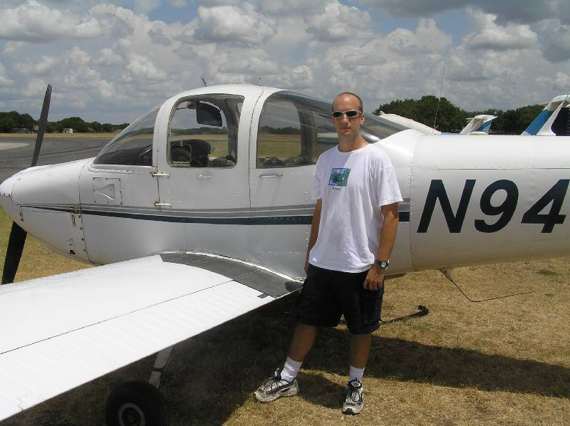
July 15, 2005, 9:00am
Logged time
2.0 hours
Total time
14.1 hours (dual)
practiced: traffic pattern and landings, emergency procedures, go-around
As I'm driving from the house up to Georgetown today, I wonder if I'll get to fly
at all. The clouds look low, REAL low. But AWOS is reporting broken at 1500AGL,
which is plenty to stay in the traffic pattern. I guess this means no other practice,
but that is fine with me. Landings are what I really want to work on anyway.
So, the clouds keep the temperature down, which prevents heat and turbulence from
building up. It was SMOOOOTH in the air today. And zero wind up to 3 kts, so essentially
calm. Then, around and around we go....
Like I said, nothing but staying in the pattern today. And feel like I'm really
starting to get this. Staying lined up on center on both departure and landing like
a champ! Joey says "this is what I want to see every time." I had said
before that I could probably get down on my own now if I HAD to, without killing
myself or the plane. But, today was the first day I really felt I could solo and
be comfortable with it, and not look ridiculous doing it!
We take a break about half-way through, which is our standard procedure now for
these 3-hour lesson blocks. Then it is back up for more of the same.
Joey pulls engine-out on me every now and then. I turn into the runway early like
I did yesterday, but the lack of wind makes me come in high. It is no big deal,
but I do start to extend on downwind a little to compensate, still knowing that
I can make the runway. One time, Joey does show a slip on final to lose a lot of
the altitude, though. He asks me to try it once, but I say I'd rather get the feel
for a slip at more like 1500ft AGL than trying it for the first time on final approach...
We also hit a couple of go-around situations. Another tomahawk trainer in front
of me seemed to be going a snail's pace. Joey shows me how to slow the plane down
without losing altitude one time (power down to ~1900rpms, one notch flaps, then
watch your pitch), and the next time around I ask him to walk me through an extended
downwind. So, it was good to get in some practice at adjusting to the situation,
since the actual landings were going so well. In fact, early on Joey even said "so
you finally learned to land an airplane..."
There was only one time where Joey had to interject without my prompting. I was
trying to hold the nose wheel off the ground, as I thought that is what he wanted
to see, but I probably held it too long and a little unintended aileron input sent
us shooting sideways at a rate that neither I nor Joey was comfortable with. After
that, he explains the nose-wheelie is just to demo that you keep flying the airplane
all the way down, and that shows that you don't have to let the nose wheel slam
as soon as the mains touch. So, he really wants all three gear on the ground before
I retract flaps and add power. This really was based on a communication breakdown
between me and Joey. I corrected this, and there was no more incident for the day.
18 landings. 16 TG, 2 full-stop. All were pretty good. Made adjustments when I needed
to, and most (not just 'some') this time were pretty smooth. The last one was probably
the worst, and it wasn't even that bad. Joey starts mentioning the 'S' word... Solo.
He says "you're medical is on Monday, right?" And that conditions like
today would be what he would be what he wanted for soloing. Finally, Joey tells
me to start looking at the pre-solo written exam. I must be getting close to doing
this on my own... I better start wearing shirts I don't like to my lessons.
July 16, 2005, 11:00am
Logged time
1.0 hours
Total time
15.1 hours (dual)
practiced: traffic pattern and landings, emergency procedures
It's a cloudy Saturday morning. In fact, it is raining at my house as I'm leaving
to head to the airport. I checked online radar, and it appears the rain is coming
in from the south, and is breaking up before it hits Georgetown. Joey tells me to
go ahead and preflight, and the weather will most likely clear out by the time I'm
done. Well, he was right, but AWOS was still reporting broken base at 1300 AGL.
Just enough to stay in the pattern, but that means no maneuvers in the practice
area today. To stay legal, no less, we plan on running the pattern at 1600 MSL.
My first landing was a greaser. I don't even think I ever heard or felt the wheels
touch the ground. Joey is silent all the way around the pitch, and he only utters
a "very nice landing" once we are down. And it continues like this for
about an hour, and 9 landings counted. I would consider most landings on the good
side, and even my worst ones were ok (definitely not 'bad').
Joey pulled engine out on me one time very early on downwind. Rwy 29 was still just
ahead and to the left of my position. Knowing I couldn't make it to 18, I said "I'm
going for 29." But, I was still 1000 feet in the air and came in WAY too high
to make the runway. Joey showed me a slip to lose altitude. He said I didn't really
do anything wrong, and that with more experience I could handle the slip approach.
But, at my current level, I should have circled around away from the threshold of
29 to bleed off a bunch of that altitude. I should have known that too, because
29 is right hand traffic, and going from left downwind on 18 to basically a right
base and final on 29 would be very natural and would have put me in position for
a normal 29 landing.
Joey keeps persistently asking "your medical is on Monday, right?" you
see, at least a 3rd class medical is required before a student pilot can solo. So
I KNOW he's thinking the S word again. Basically, he wants me to brush up on maneuvers
tomorrow. Then I'll get the medical on Monday. Joey is off Monday, so I'm going
to do an hour or so with Ryan to really hit the maneuvers pretty good. Then, Tuesday,
my next lesson with Joey... I better wear a shirt I don't care about losing and
bring an extra to wear home.
July 18, 2005, 11:00am
Logged time
1.3 hours
Total time
16.4 hours (dual)
First, a little backtracking... I was supposed to fly yesterday (Sunday, July 17).
But, the whether was finally bad enough that we couldn't go up. I used the time
at Pilot's Choice to study the ground school lessons and watch the video I was going
to miss because of having to go to baby classes instead. The time definitely wasn't
wasted.
This morning (Monday), I went and got my third class medical. Everything was ok,
except my right eye was acting goofy in the eyesight test. I wouldn't have passed
for 2nd class (commercial rating), but my eyesight with both eyes was good enough
for private rating (3rd class). Still, I'd like to ask my eye doctor why I'm not
20/30 in the right eye by itself...
Joey was off today, so I went up with Ryan. He is just as quite as Joey... Which
is a good thing. Just a little comment here and there. The wind was a little trickier
today, so I tended to forget to fly the airplane all the way down, and would let
the nose drop a little too soon. No biggie, but I need to remember to watch for
it. Also, Ryan is pretty strict about actually flying a rectangular pattern (as
on crosswind to downwind). I was tending to round them off, which Joey was ok with,
but Ryan said Beth (the owner of Pilot's Choice and the FAA designated pilot examiner)
wants to see rectangular legs. That means I would level off for just a second, and
then really kind of have to fly back in towards the runway to maintain proper downwind
distance.
6 TGs, and we head out to the practice area. There aren't too many side gusts today,
but I tell you I was fighting the plane to maintain a constant altitude . That made
slow flight interesting... but the stalls went ok. Ryan said maybe I nosed down
a little much in the recovery, but it was nothing that is not easily remedied. And,
damn turns about a point still haunt me. I really think I start too close in to
the point, which makes it disappear under the wing if I'm even a LITTLE off. I had
Ryan demo it for me, and I could tell he started out further from the turn point.
Also, even he said today wasn't really good for it since the winds aloft were minimal.
Ok, there were a couple of strong side gusts worth mentioning... so strong that
I had full control deflection to compensate for them and got no response from the
airplane. That was an interesting feeling.
I handle pretty much everything to get back to the airport and into the pattern.
Remembered to check AWOS for wind and altimeter settings. Remembered to call position
8 miles and 4 miles out. I'm reasonably confident I could do this part on my own.
A couple more landings, and Ryan made me do one with no flaps. I hadn't done that
before, so I had to think on my feet a little. Basically, it feels like you will
come in low and fast, so you have to extend downwind to lose altitude since you
can't use flaps to do it.
Ryan asks how many hours I've got, and I say "about 15 before this lesson."
he says I'm ready to solo. That's two instructors who think so, so it just might
be true.
I spend some time at the hangar afterwards working on the pre-solo written exam.
I can do most of it by memory, and the questions that I don't know, I know where
to find them. The only things left unanswered for me are how to calculate required
takeoff and landing distances. I haven't hit this in ground school yet, so it is
a mystery to me.
Tomorrow, 11am. Look out below... I just might be up there solo...
July 19, 2005, 11:00am
Logged time
1.1 hours (0.7 dual, 0.4 solo)
Total time
17.1 hours (dual)
0.4 hours (solo)
First thing today, we went over the pre-solo written exam. I had worked out most
of it before-hand, so then filling out from memory was no big deal. The only thing
I wasn't able to do was takeoff and landing distances. That will come later in ground
school, and with GTU's 5000' runway and the light Tomahawk, I doubt these distances
will be a problem for soloing at GTU. Then, we went ahead and got the paperwork
stuff out of the way. Joey endorsed my medical certificate and my logbook saying
he's sure I'm ready to solo. Here's hoping...
We go through a normal takeoff and head east to the practice area. My maneuvers
are mediocre at best. Well, I seem to be able to enter the maneuvers ok, but for
some reason my mind is skipping a beat when it comes to recovery. Like, for slow
flight, I don't add full power back. Why? Who knows... Then, I seem to really be
diving on the stall recoveries. I think I need a better feel for that... No forward
pressure, just relieve back pressure and let the nose drop naturally?
We start to head in to the airport, and I get lined up for 45deg entry for left
downwind on 18 just fine. I forget to check AWOS for wind and/or altimeter changes.
Then, I forget to turn on the landing light ~3 miles out. Geez, what ELSE will I
forget?
We do two touch and goes, and the second one really kind of sucks. I landed cockeyed,
and the wheels barking let me know it. I am quite surprised and how much abuse these
little airplanes will take. land crooked, and it will take it and tend to line itself
up with the forward momentum direction. The third one goes A LOT better. Had to
crab a little into the crosswind from the left, and then used right rudder to keep
her lined up. Nice and easy touchdown. I'm golden.
We full stop, and head over to the fuel pumps. Joey gives some last minute advice...
Watch your airspeed, use right rudder to line up the nose (but not too much), and
don't flare too high, let me see three TGs and a full stop. Then, he proceeds to
exit the aircraft.
The first thing I notice is NOT the lack of another physical body in the aircraft.
What is more disconcerting is the lack of someone to talk to inside the plane. I
don't think I am explaining it quite correctly, but hopefully you catch my drift.
You do have a radio, but you can't just blabber on and on about this and that. That
is when I really felt alone.
I taxi back to 18, do a quick pre-takeoff check. Lights, camera, action, and I call
my departure on 18. Takeoff is somewhat smooth. it's kind of bumpy over the runway
because of the heat. I also need to use a lot of right rudder to keep the nose from
wanting to drift left. Maybe left turning tendencies are more pronounced when you
are 210lbs lighter in the plane? I do the pattern just fine. And I really grease
the first landing. Not to brag, but that first one was the bees knees. One up, one
down... do it again. The next time around the pitch is about the same, but the landing
is terrible. OK, not terrible, but I did flare too high, float a little, and then
come down. Still came down on the mains first, and let the nose drop gently. One
more time around, and same story... flared a little too high. But, the plane isn't
fubar'd, and I'm still breathing. One final time around, and I make it mediocre
again. My full stop was pretty sweet though. Full aerodynamic braking, and had plenty
of time to stop at the main exit taxiway.
I taxied back to the pumps, filled her up, picked up Joey, and headed back to Pilot's
Choice. He proceeded to cut the back of my shirt off (which was disgustingly sweaty,
so it will have to dry before he can write on it and hang it on the hangar wall).
Joey mentions that he was probably more nervous than me. Turns out I was the first
student he ever soloed. I knew he was pretty new, but I found this bit of info a
tad disturbing. I'm guessing it is somewhat of a learning process for him as it
is for me. Stuff I said earlier about his teaching styles (like not doing a post-lesson
brain dump) are a little more explainable now, and he has gotten better at it (although
he tends to ask if I have any questions of him, more than lead the conversation
himself by offering words of wisdom).
So I did it. I soloed in an airplane. The first phase of my training is complete.
Now maybe we'll get to start the funner stuff like actually going places (cross
country trips). The takeoff and flying was no biggie. Joey had been essentially
quite for 3 or so lessons now. So, I just concentrated on my procedures, made my
radio calls, and brought her back around and in. That part was not frightening at
all since lately I was basically disregarding Joey being there anyway. :) and, I
always had the option to go-around if something didn't look right. 3 tTGs, 1 full
stop. Crazy to think that around three weeks ago I was as fresh as a daisy.
Joey was kind enough to snap some pictures of my foray from the confines of earth.
So, here are the requisite geek photos of me on my first solo:
Prepare for takeoff...
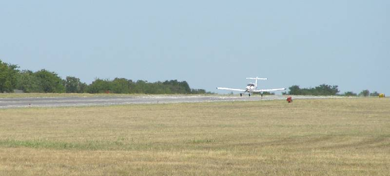
All alone, in the air...
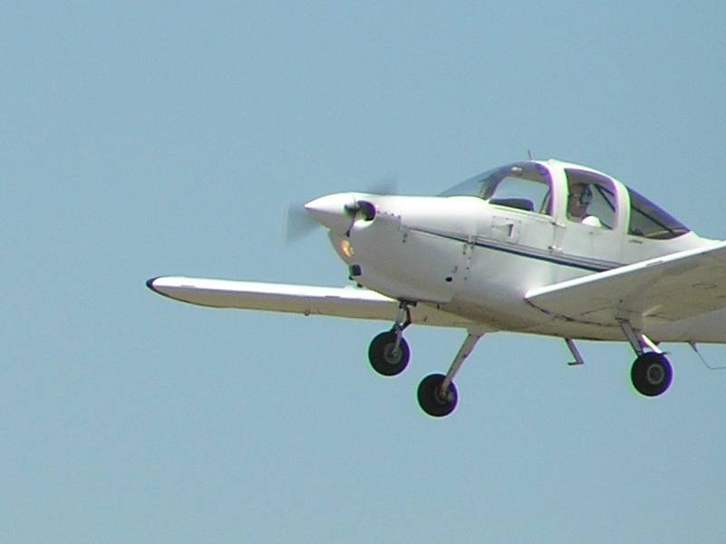
On the ground again, safely no less.
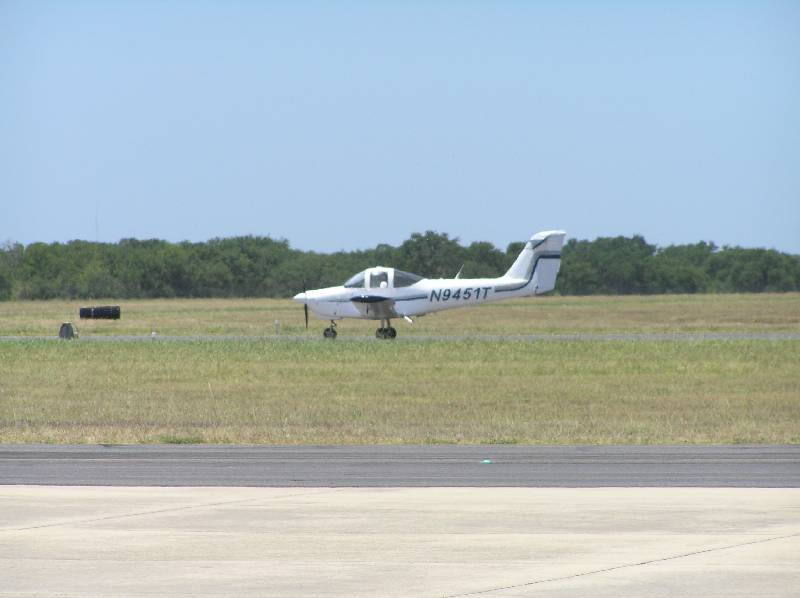
Taxiing off the runway.
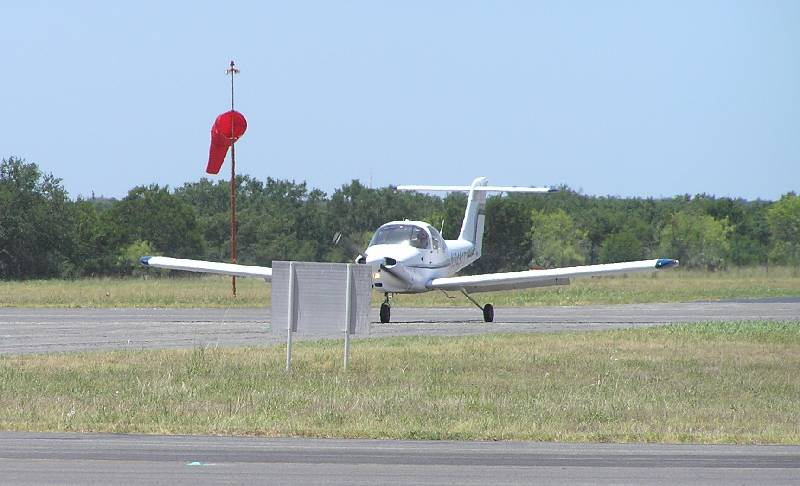
Heading back to the fuel pumps.
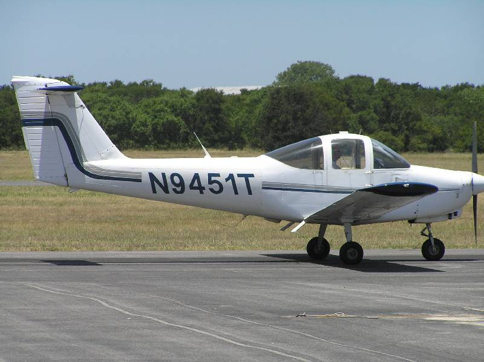
Thumbs up from the successful round trip.
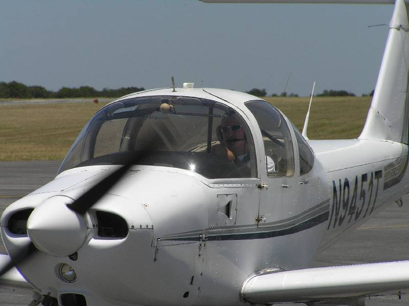
Sexy top gun pose.
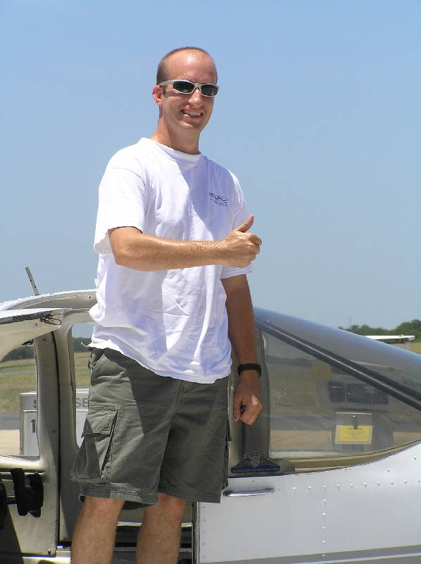
July 20, 2005, 9:00am
Logged time
0 hours
Total time
17.1 hours (dual)
0.4 hours (solo)
Crappy weather. Got in the plane and started it up. Cloud bases too low to do anything.
Still got charged for 0.1 hours rental. Sucktitude.
July 21, 2005, 9:00am
Logged time
1.6 hours (1.0 dual, 0.6 solo)
Total time 19.1
18.1 hours (dual)
1.0 hours (solo)
practiced: emergency descents, cloud dodging, maneuvers, traffic pattern and landings
Joey wants to go up with me again before the second 'supervised' solo. I want to
practice a few maneuvers first before we start heading around the patch for TGs.
The cloud base looks pretty low to the east (the normal practice area), so we decide
to try and venture west instead to see if we can't find a little break in the clouds
to poke through. There's a small one over lake Georgetown, so we do a gentle climbing
turn to the right and spiral up through it all the way to 4500' MSL. Thankfully,
it is also much cooler that high.
We run the gambit of maneuvers, which I more or less nail (or at least stay within
limits). My stalls felt the best they have in a while. I could really 'sense' the
break today. I was also having a tendency to force the nose down myself (and really
dive), but today I was just letting it fall naturally, getting the 60kts for climb,
then easing back on the yoke.
Time to head back down through the clouds and to the airport. We find the same small-ish
hole in the clouds to get back down. Joey takes the opportunity to teach me two
emergency decent procedures. One, reduce power to get in flap range, add full flaps.
Then nose down HARD, but not so much that airspeed gets out of the green arc (maneuvering
speed range). I think we got 1500-1700fpm descent out of that one. Two, normal configuration,
and just do 45deg steep turns without back pressure to keep the nose up. And then
just spiral on down. This was pretty fun. We got over 2000fpm descent, and were
just kind of whipping around in left and right circles all the way down. Good times.
I easily find the airport, and I know all the radio calls to make. This is really
my first time to cross midfield to enter left downwind for 18, but I've seen it
and heard it enough times that it was no big deal. Two TGs, and then we stop to
let Joey out. My solo landings were much better today. Conditions were ideal. I
greased 4 out of 5, and even the non-greaser wasn't too shabby.
Next time, I'll be all on my own... no supervision.
July 22, 2005, 9:00am
Logged time
1.8 hours
Total time 20.9
19.9 hours (dual)
1.0 hours (solo)
practiced: cross country, runway illusion landings, class C ATC radio communications
Joey wants to get me out of the GTU area, and start showing me other airports with
different sized runways, and to get a quick intro to ATC communications in class
C. First we head the 15nm east to Taylor. You read about runway illusions, but until
you experience them the first time, you really have no idea how profound they are.
Taylor's runway is 4000x75 (compared to GTU 5000x100). It is small, so you think
you are higher than usual. People tend to adjust accordingly and end up coming in
low and fast. I didn't think I did too bad on that. What was MORE disconcerting
is the power lines on the approach to 17 (although, they are very low), and the
hills and power lines on the departure from 17! On a hot day, not getting good ascent
rate, I bet one could get nervous trying to climb out of there. Also, it took some
getting used to when making the different radio calls. First, its 'Taylor traffic.'
I had been saying 'Georgetown traffic' for so many hours, that it was engraved in
my brain. Then, is it right or left pattern, what is the runway, etc. I bumbled
a few times, but eventually got the hang of it.
We do a few TGs, and then depart south for Austin-Bergstrom. At a safe altitude
from Taylor, it is immediately time to call Austin approach. Joey, of course, is
prompting me for the radio calls the whole time since I have ZERO ATC communication
experience. They don't get our Mode C right away, so they tell us to stay out of
the class C. We mess around for a second, and then all of the sudden they come back
and say they have us, and to proceed inbound. We start to make a huge left base
leg for 17L, but approach control says hey guys, proceed straight in, there is an
MD-80 on approach for the parallel (17R). Not wanting to get anywhere near the heavy
jet, we do as told. The runway illusion at this airport (our runway was 9000x150)
is that you are low, really low. The four-light PAPI (glide slope indicator lights)
helps alleviate this, and I come down alright. On the ground, we switch to ground
control and get Taxi instructions to Trajen FBO. We have to hold short a few times
to let other bigger, nicer airplanes go by first. No respect, I tell you... We rest
at Trajen for a while, drop off some excess weight, and then get something to drink.
We rest for a while, and then get ready to go. First thing in the plane is to get
'clearance delivery,' which I read is mostly for IFR clearance, but for some reason
Bergstrom likes even VFR to get it. We get clearance, and then contact ground for
instruction. We proceed to 17L, and have to hold short this time for a Continental
737. It was weird to see my little spec of a plane next to a big airliner. I know
they get preference, but still... I get to share the same airport with them. Neato.
After doing the run-up at 17L, we contact tower and get departure clearance. And
we're off. I swear, the runway is so long, that I could take off and land 4 (or
more times). We switch to Austin departure, and while it seems like they forget
about us a couple of times, they get us back to Georgetown just fine. One thing
to remember, I need radio practice at controlled fields.
On the way back, we pass over the general vicinity of my house, so I ask Joey if
I can try and find it. He concurs, and I spot it no problemo. Back at GTU, it is
familiar territory, and we only do one landing. Get gas to be nice to the next guy,
and go park it.
No soloing on this outing. There's a plane available later, maybe I'll come back...
July 22, 2005, 3:00pm
Logged time
1.0 hours solo
Total time 21.9
19.9 hours (dual)
2.0 hours (solo)
My first time at an unsupervised solo. And, Joey even gave permission for me to
leave the pattern! I thought I'd just have to go around in circles this first time,
but I'm not gonna waste the opportunity.
First, I do two TGs to make sure I didn't forget how to land, and that the conditions
aren't out of my comfort zone. Then, I head east to the practice area. I climb to
4500, because I want to practice maneuvers by myself, and I want PLENTY of room
to recover. The maneuvers go ok. I lose like 700' on the stall recovery. It is the
first time I really pay attention to it, so I'm not sure if that is a lot or not.
Also, I think maybe I wasn't detecting the break quick enough.
I head back to the airport (hey, I found it by myself!). I don't forget any radio
calls, turn on landing light, check AWOS, or anything. I re-enter the pattern just
fine. Kind of crowded today up there... 4 more landings. On one, a dual Cessna had
to go-around when I was on the runway because he is about twice as fast as the tomahawk
and was right up my backside. He calls and asks if he can cut crosswind in front
of me, and I acknowledge that I will extend upwind. There is a little rain shower
in front of me, so I figure I better go around it. Thing is, it is way further out
than I thought. I could have turned in front of it. So, basically, I departed the
pattern to the south, and re-entered left downwind after going around the shower.
I get her down just fine. Get gas, and have plenty of time to tie her down. First
trip all alone. Funny to think they trust me alone with an airplane now. Yikes.
July 24, 2005, 9:00am
Logged time
2.4 hours (dual)
Total time 24.3
22.3 hours (dual)
2.0 hours (solo)
practiced: cross country Georgetown -> Llano -> Fredericksburg -> Georgetown
First cross country trip. My planning for the trip is way behind, so we end up leaving
an hour late. I thought Joey was going to help with this first one, and I would
do the next one. But, later we talk about it and apparently I was wrong. My 2.5hrs
of ground instruction yesterday counted as the 'help.' Whatever.
So, because of that, we are almost 1.5 hours behind. The first leg was to
Llano. There are a lot of good landmarks, so I know where I am the whole
time. We go by the giant 2000' tower, cross Lake Buchanan, cross Burnet, and find
the Llano field just fine. One touch and go, and we head south towards Fredericksburg.
The landmarks start getting fewer and further between. Joey uses VOR tracking as
a backup to give me hints as to where I'm at. I don't do too bad, and only come
in a little north of the airport. T82
has runway 14/32, and 14 is active today. It has a right hand pattern, so I make
a midfield crossing to enter right downwind 14. We get down alright, and make a
full stop. We get fuel. We head to the diner and get a coke. I wish we weren't late,
because eating at this diner would be pretty cool. I'll have to come back here sometime
and check it out. No time left (we're actually already late), so we get out quickly.
From Gillespie county (the airport) back to GTU, it is no problem. I think I made
a heading error on the flight plan, and we're heading more south than we should
be. We can tell by using pilotage. So, I correct a little to the north, and we do
just fine because the territory starts looking familiar. Lake Travis is pretty hard
to miss as long as you are within 20nm of it. We spot Lakeway airport to our 3 o'clock.
You can see Lake Georgetown from over Lake Travis, and you use that to bring you
right into the field. We still come in a little south, but that makes for easy entry
to left downwind. Somebody has a stuck mic on the frequency, which makes for a painful
and unpleasant radio experience trying to land. But, it is over quick enough, and
we're home safe. I think around 155nm round trip, and 2.3 hours of engine-on time.
July 28, 2005, 5:00pm
Logged time
1.1 hours (dual)
Total time 25.4
23.4 hours (dual)
2.0 hours (solo)
practiced: performance takeoffs/landings (short and soft field)
This was the first time I've been flying in a lesson and been 'bored.' We stayed
in the pattern today and worked on short field takeoffs/landings and soft field
takeoffs/landings. The landings still seem like landings, big whoop. Basically,
for short field you just use full aerodynamic braking right away and get on the
brakes above 40kts. Just remember to ease into them and don't lock them up.
The takeoffs are slightly different, and were a little more fun. For a short field,
use all available runway. Stand on the brakes and apply full power. Check gauges,
and let go of the brakes. At rotation speed (60 in the tomahawk), rotate and then
climb at Vx (best angle of climb, 61kts). Hold that till 50ft off the ground, and
then pitch for Vy (best rate of climb, 70kts). For soft field takeoff, keep rolling
from the taxi onto the runway. Always hold back on the yoke to keep pressure off
the front wheel. Apply full power, and you'll feel the nose want to come up. Keep
the nose off, and wait for the mains to come off. When that happens, lower the nose
and accelerate in ground effect. Get it to 70kts, and takeoff from there. You can
also let it get up to 80+ kts and then REALLY shoot up in the sky fast.
Joey and I held contests for short field to see who could stop the quickest. Of
course, I suck and he won. I know, I need practice. But, Pilot's Choice doesn't
let you land on anything less than 3000ft, which is plenty for the tomahawk in any
conditions.
July 30, 2005, 11:00am
Logged time
2.0 hours (solo)
Total time 27.4
23.4 hours (dual)
4.0 hours (solo)
practiced: solo maneuvers, "mini" cross country
I was supposed to go up with Joey today, but Ryan and I convinced him it was more
wise to build up my solo time. I also decided to switch planes into N2446N, which
Joey badmouths but everybody else doesn't mind. Also, I wanted to get an extra hour
in, and 9451T was booked already for that time. I have to say, I liked how 46N flew.
seemed to handle real nice, no problems with rudder or trim, and a good climb rate
with relatively full tanks.
I did two TGs right away to make sure I could still land. The pattern was BUSY.
Busier than I've seen it. People were extending upwind, crosswind, downwind, etc
to make room. Some 'sundowner' in front of me on downwind called and said he was
coming in behind the tomahawk, so he had me confused with some Cessna actually.
I was behind the dude at his 7 o'clock, so I radioed to ask his intentions. Then
I had to extend way on downwind to get him off the runway. thankfully, that was
my 2nd TG, so I just departed the pattern to the south after all that nonsense.
I headed south to find my house again. I stayed about 2700 ft MSL, or about 2000ft
off the ground. I did some turns around a point, using the house as a reference.
But, it is really hard to do that high off the ground, so basically I just kind
of flew around our neighborhood and spied on our house.
From there, I headed northeast to try and find the Taylor airport by myself. I hit
HW79 pretty quick, so I just followed that all the way to Taylor. I switched to
Taylor CTAF to make sure I wouldn't bug anybody, and announced my flight over midfield.
No action in Taylor today (weird, since it was great weather, and Georgetown was
hopping).
From Taylor, I decided to climb up over Granger Lake and do some maneuvers. There
was plenty of room in the clouds, so I climbed up to 6000ft MSL. That was the highest
I had been by myself (actually, the highest anytime in the tomahawk). It was NICE.
Smooth. Cool. I did tons of power-off stalls, plenty of power-on stalls, several
360s in steep turns. In the power on stalls, I seemed to have climbed to 7200 ft
or so.... Well, it DOES simulate stalling on takeoff, which is a climb. I kept my
altitude loss on the stalls to 200-300 ft or so. I did a lot better at recovery,
and didn't forget the flaps this time. My steep turns were 'ok'. I bounced around
200 ft up and down (100ft each direction), but that is within limits. That high
up, and sort of in between clouds, it was hard to keep a horizon reference. But,
they were still fun.
I tried to find Taylor again as a reference to get back to Georgetown, but I never
saw it. It was easier to just spot GTU from that far (and high), and head straight
for it. I descended pretty quick using the 45deg banked turns without back pressure.
I was falling FAST. So fast that I could audibly hear the change in wind speed around
the plane. I looked at the airspeed indicator, and I was a little close for comfort
to the yellow arc, meaning I was almost out of maneuvering speed. Whoops, better
keep the airspeed down and not descend so fast. The air was smooth, so I wasn't
in danger of bending metal, but I don't want to tempt fate. It was pretty fun going
that fast though.
Made it back to GTU no problem. Not as many people in the pattern, so I had plenty
of room to get in on the 45 for left downwind 18. Did 6 more landings. They seemed
pretty flat today. Wasn't getting a good flare. And when I DID flare, they seemed
to be too high and I would float. Some bounces, not hard though, and while they
weren't exactly my favorite landings ever, they weren't bad and people wouldn't
laugh TOO hard if they saw them.
That makes 4 hours total solo. Maybe I'll get in one more tomorrow, and then start
thinking about what I want to do for a solo cross country. In the mean time, I need
another cross country with Joey, and a night local with Joey before we do the night
cross country after that. Almost 30 hours down. I'm getting close...
July 31, 2005, 11:00am
Logged time
1.2 hours (dual)
Total time 28.6
24.6 hours (dual)
4.0 hours (solo)
practiced: slow flight, stalls (power on/off), steep turns emergency procedures,
performance takeoffs/landings
Today was just a big review of everything we had covered at some point in the past.
I have a feeling Joey wanted to make sure I wasn't forgetting anything, and that
I was really practicing maneuvers during my solo time instead of just farting around
(when in reality, I do both).
We did do one different thing today... A "negative G pushover." Basically,
you nose down to pick up some airspeed, then nose back up to around 30deg or so.
Then, nose back down. If you picture it, you basically make an arc, and at the top
of the arc you become weightless. It is pretty fun, if you like that negative G
feeling (which I do). Seth and I had done this on my freedom flight, but this is
the first time since then that I was actually taught the maneuver. And then, of
course, Joey used the opportunity to pull engine-out on me. You know, since I was
doing something new and fun, then the 'oh crap' factor kicks in. But, I nailed emergency
procedures -- Aviate, Navigate, Communicate. I pitched for 70, picked out a good
landing spot real quick, pretended to turn the radio to 121.5, pretended to turn
transponder to 7700, checked primer, switched tanks, add carb heat, cycle mags,
and after all that "didn't work," made my mayday call. All in the span
of about 45 seconds or less. Joey was satisfied, so the engine magically restarted
and we were safe.
Headed back to GTU... Gonna get another plane to try some more solo right after
this...
July 31, 2005, 1:00pm
Logged time
1.2 hours (solo)
Total time 29.8
24.6 hours (dual)
5.2 hours (solo)
practiced: VOR navigation
I wanted to go ahead and round-out my necessary 5 hours of solo time, so I figured
right after my last flight was just as good a time as any. I hadn't wrapped my head
around VOR navigation yet either, so I wanted to give that a shot in real world
situations.
Alas, the VOR had me all screwed up. I hadn't reviewed how to use it before I took
off, so I got the 'to' and 'from' indications all backwards. I finally just used
dead reckoning to get back of granger lake and find my way to the airport. (later,
I found a VOR simulator on the web. I messed with that for a while, so I think I
got it all straight now).
The pattern was, again, busy as hell. 11 was in use, which I had been on before,
but never solo. And, there was a guy right in the pattern in front of me that was
making ZERO radio calls! People would call in entering downwind, they would say
they had me on downwind, when it was really the other guy (I was still crosswind).
Needless to say, I see the importance now of making good, accurate radio calls.
I know it is not 'required,' but it sure helps when keeping traffic straight. This
also gave me good opportunity to learn to adjust to situations. People were extending
legs, etc, and there was lots of different speed aircraft mixed in... just enough
to keep things interesting.
August 3, 2005, 11:00pm
Logged time
1.3 hours (dual)
Total time 31.1
25.9 hours (dual)
5.2 hours (solo)
practiced: night flight, night takeoffs/landings, night (mini) cross-country, class
C ATC radio, landing light out landings
Well, this is right after ground school, so that means it is around 10pm or so.
I want to get in some night local time before Joey and I head out for a night cross-country.
My ground instructor, Chris Behnke, agrees to go up with me this late. You see,
it doesn't really get dark until 9pm anyway this time of year, so it is not MUCH
later than actually required for night flight.
We decide to do a mini-cross country to Austin Bergstrom and back. Chris asks me
what the game plan is, and all the sudden I realize I've done zero planning. I remember
the approach frequency, but little else.
By the time we find a flashlight, preflight, put away the cats, and all the other
nonsense, it is after 11pm before we are wheels up. Night flying is definitely different.
The takeoff wasn't much of a big deal, but you can instantly tell the air is smoother.
I rather prefer the view, as well. Navigation seemed easier to me, at least over
the city. Landmarks (roads, buildings) were easier to pick out.
And here is where my lack of planning starts hurting me. I forget to call ATIS.
I forget the ATIS frequency. I bumble the initial call to Austin Approach (and forget
to mention that I am calling with information X-Ray). Chris guides me through it,
but I am once again affirmed in my belief that I need more class C radio practice.
We do one touch and go on 17L at Bergstrom. The tower gives us a right turn out,
which ended up being really neat! we got to turn back over the main terminal, and
then downtown Austin was right off the left week as we turned north back to Georgetown.
The view was spectacular. You see, a left turn out would have been boring... elfin,
Manor, and big empty spaces. I felt privileged to get that right turn out. Now,
this wasn't for our benefit, of course. The tower had a 757 turning a left base
onto 17R, which just might have gotten in our way had we turned left. You can guess
who the winner would be in that collision.
Austin departure gives us a heading back to GTU, and eventually tells us to resume
own navigation. We report when we have the field in sight, and Austin radar service
is terminated. Chris takes the time to mention that he starts thinking about engine-outs
at night... considering picking a place to land is a little riskier proposition.
His advice... Aim for a big black spot. It won't be residential. It might be water,
it might be field. You never know, unless you are intimately familiar with the territory.
Now that I think about it, the big black spot I saw was probably lake Georgetown...
We do some touch and goes in the pattern. I don't have any problems, until the flare.
Chris had to help me flare at the right time, since I would have done it late...
And made a nice hard landing. Also, I realize I don't like the highest intensity
lights on the runway. Medium was much better for me. The high intensity lights were
very bright, and strobing. Dear god, it was distracting! Resetting them to medium
made a difference. The last one we do with the landing light out. It was actually
my best, because you HAVE to flare high. How else would you do it? So, I flared
high, and just let it settle by itself. E-z-p-z.
In conclusion, I need to remember that for anything other than a simple short local
flight, that planning is of the utmost importance. You probably don't want to be
digging around for frequencies to call, especially in the dark. That, and I need
MORE practice at controlled fields. Damn it. I just expect to be good at that kind
of stuff, and I feel like a doof when I bumble radio calls. Next weekend is a cross
country to two controlled fields (YTBD since George W is in Crawford). Ready or
not, towers, here I come! (but, this time I will have planned, so I will be more
prepared).
August 6, 2005, 11:00am
Logged time
3.0 hours (dual)
Total time 34.1
28.9 hours (dual)
5.2 hours (solo)
practiced: cross-country (GTU ->
CLL -> ACT -> GTU), towered
airports, flight following
Second dual cross country. I finish my planning on time this time, and that is about
11am. But for some reason, we STILL leave 45 minutes late. We had to keep checking
the weather. I had to preflight. And Joey got stuck talking to some walk-in customer.
I swear, it is always something.
The trip today is Georgetown to College Station, to Waco, and back to Georgetown.
And yes, the HUGE TFR in Crawford is active. Joey swears that he checked on it,
and as long as we file a flight plan, do a full stop, and file another flight plan,
then we should be ok. famous last words....
Georgetown to College Station was easy. My pilotage was dead on, except for maybe
a few minutes difference between checkpoints. I was also getting way more comfortable
on the radios. We talk to Austin first to get flight following, and they eventually
drop us and tell us to call Houston center. We do, and we get flight following all
the way to Easterwood airport. Houston hands us off to Easterwood tower, and they
guide us in no problem. Once in College Station, we get the courtesy car and head
to the Dixie Chicken for a hamburger. We are already late, so we try to make it
quick. I tried to convince Joey to skip lunch, but he would hear of it...
The ride from College Station to Waco is also uneventful. You can follow highway
6 for a while, but then it diverges a little east. But, you still are on top of
the Brazos river the whole way. And, we start getting close to the TFR airspace.
We've followed all the rules, but Waco approach has trouble picking up our mode
C. Eventually, they say they have it, and we are cleared in straight to Waco Regional.
Lake Waco points you straight to the airport, so it was easy to find. Once again,
we get down easy enough. We taxi to the ramp and shut the engine down long enough
to close the flight plan and open another one.
So, we're up again. And again, the tower says "hey, umm, is your mode C on?"
they can't pick it up, so they have us 180 back to the airport. The "oh crap"
factor is kicking in. We're in super-strict TFR airspace, Joey is freakin' out thinking
he'll have tons of paperwork (or even a pulled license). I'm pissed because I tried
to convince Joey we shouldn't even have screwed with the TFR. We get back to just
about left downwind for 19, and the tower calls back and says "ok, we've got
your Mode C now. Proceed south." we 180 again, and get the hell out of there
ASAP.
Heading south, you can go right over lake waco, and by that time you see Lake Belton.
And from Lake Belton, you can see Stillhouse Hollow Lake. And by that point, I35
gets right under your track, and you follow that all the way back to Georgetown.
The pattern is empty (first time I've seen that), so we make entry on extended left
base for 18. Joey is 1 hour late for his next guy, so we don't bother filling up
the tanks.
It was a good trip. Except for the Mode C funkiness, everything went as planned.
Joey and I agree, I am ready for a solo cross country. But, we have to do a night
dual cross country (Beth's rules) before they'll let me go alone. Maybe we can knock
that out this week (the night dual), and I can solo XC next weekend.
August 12, 2005, 9:00pm
Logged time
2.5 hours (dual, cross-country)
Total time 36.6
31.4 hours (dual)
5.2 hours (solo)
practiced: night cross-country (GTU ->
SAT -> AUS -> GTU), class
C airspace/airports, flight following
This is the requisite night cross country before I can do a solo day cross country.
Why a night XC is required first (by Pilot's Choice, not the FAA) is beyond me.
This will also give me a chance to go through two class C airspace airports, and
really get comfortable with the radios.
Again, I'm more prepared this time (even have a flashlight! Just, remember not to
use pencil for planning a night cross country...), so everything really does go
smoothly. It's a beautiful night, nearly cloudless, and it is supposed to be a big
meteor shower night. Well, on the climbout, we notice that the predicted winds aloft
were dead on. Straight out of the south at around 30 knots. My word, the climb out
ground speed was hovering around 50kts! Yes, that means the cars on I-35 were passing
us by. You may laugh, but it is a crappy feeling. Except, that I am in the air and
not dealing with traffic, and I can go as the crow flies, and that tailwind coming
back will be sweet.
I planned my checkpoints around the lighted cities on I35 (San Marcos, New Braunfels),
and then Canyon Lake. Canyon Lake was actually pretty visible from the sky given
the half moon and cloudless night. About that time Joey yells, "dude, check
this meteor out!" A meteor was streaking across the sky, on our starboard,
coming from behind to upfront. Oh man, it was sweet. It looked like it was only
a few hundred feet away. But of course, I'm sure it was like 300,000ft up. Anyhoo,
we thought we get a nice light show the whole ride, but that was the only one we
saw. We continued cruising towards San Antonio at around 75-80kts ground speed.
You could see the San Antonio city lights from 30nm away. Next, it was easy to find
the flashing green/white beacon at the airport. I couldn't see the runways yet,
but Joey told me to follow the HWY 281 in, which sets you up for a pretty good 45
entry to final for 12L. I can see the runways pretty soon after that, but it is
still a little disconcerting to have heavy traffic landing parallel on 12R. The
runways aren't THAT far apart (or so it seemed to me). We do a touch and go. Ok,
a bang/bounce and go! This was definitely the hardest landing I've made so far.
Chris B had taken the controls from me before when I was about to pancake the last
one. I actually preferred Joey's method of letting me make my own mistake so I would
better remember to flare sooner next time. We then turn out almost dead northeast
to head to Bergstrom. Then I make my only bumble on the radio. The controller said
"turn your heading, altitude your discretion. I'm used to repeating back headings
and altitudes, but I didn't know how to respond to "do what you want."
do I say "ok, turning 045deg, climb to 3500" or what? Instead I say, "uhhhhh"
and look at Joey. He quickly handles it and says "turning our heading, our
discretion." Just repeat back like a parrot, I guess. Joey wasn't too upset,
because it was a phrase I wasn't expecting.
Getting back to AUS is no biggie. Plenty of lights to follow, and I35 is lit up
pretty well. At one point there is an airplane heading in our general direction,
and Joey says "how do you KNOW it's coming at us." I knew that the port
light (red) was on the right, and the starboard (green) was on the left, so it had
to be coming at us. Joey said I was correct, but gave me the mnemonic "red,
right, WRONG" to remember that the red light on the right meant they were closing
on you. I know from my planning that north of San Marcos we should be crossing I-35,
and start looking for the airport. Heading this 45 deg ground track, I have to crab
way into the wind to maintain it. I feel like I'm flying sideways. Soon enough,
the airport is in site, and we make a special request for TGs on 17R. We setup for
right downwind on 17R, and with the nose pointed straight at the runway, we ARE
flying sideways. That was a weird weird feeling. It would have been an excellent
opportunity for ground reference maneuvers. We do a couple of TGs (no bang/bounce
this time). I do a little better, but I still realize I need night landing practice.
On one trip around the circuit, we have to extend downwind for a regional jet to
land before us. We extend way out, and then I correctly tell Joey (after he asked
me) that we need to land above his glide slope, and past his touchdown point. Given
the runway is 2 miles (12,000ft) long, we pick a point 1/3rd the way down, and STILL
have 8000ft to land. No problemo.
After the last TG, we tell the tower we want to depart back north VFR direct to
Georgetown. Since we were on the right, we got to go over downtown again. It's a
pretty swell view from 2000ft. They stay with us for a little bit to give flight
following, and just about the time we have the field in sight, they drop radar service
and we squawk VFR. About this time we start noticing that we are hauling ass. The
GPS ground speed is ready around 137 kts! In a tomahawk! we HAD to have about a
40kt tailwind at 3000ft. It was pretty cool. Joey said that is the fastest ground
speed he has ever done in a tomahawk. and I believe it, because they are slow as
molasses. I digress... We make it to GTU and land just fine.
Beautiful weather. Beautiful flight. I'm ready for the solo cross-country now.
August 14, 2005, 10:00am
Logged time
2.5 hours (solo, cross-country)
Total time 39.1
31.4 hours (dual)
7.7 hours (solo)
practiced: solo cross-country (GTU -> T82 -> AQO -> GTU), flight following
Well, I came in yesterday (the immediate morning following my night cross country)
all prepared for my first solo cross country. Of course, mother nature didn't cooperate.
First, the clouds were too low, and by the time they picked up, the winds were too
high. They were at least 15kts, gusting to 20+. Definitely past the the Pilot's
Choice limits for student soloing. And, by the end of my time, rainstorms had settled
in between GTU and Fredericksburg. Bummer.
So, I rescheduled for today, and gave it another go. When I first woke up, it didn't
look promising yet again. Same conditions as yesterday morning. But, the clouds
lifted a little faster, and the winds died down to 12kts just long enough for me
to take off. I was outta there!
The high winds aloft were back today... 170@30kt. So, I kept getting blown off course
to the north. I follow my checkpoints just fine, and I have the stonewall VOR dialed
in as a backup. Not to mention Michael Hovis's hand held GPS to serve as a third-line
backup...
I get flight following from Austin approach, and they quickly hand me off to Houston
center. It's a tad bumpy up there, and I'm getting blown all around, so I have to
steer a lot to maintain course. No way I could just point it the way I wanted to
go and stop paying attention. From the air, I got to see Lakeway airport, horseshoe
bay, and then a lot of nothing till Fredericksburg. Before you know it, I report
that I have Fredericksburg in sight, and VFR radar service is terminated. I switch
to Gillespie airport AWOS, and the winds are 200@14 gusting 20! well, crap. Gillespie
has runway 14/32, so 14 is obviously the best choice, but that still gives me a
12kt crosswind with gusts at 17. Definitely stronger crosswinds than I've landed
in before. Oh well. When I overfly the airport to enter right downwind for 14, the
wind sock doesn't look that bad. So I decide to go for it. Let's just say it wasn't
pretty, but I crabbed in plenty fine, then aileron'd into the wind and lined up
the nose with rudder. I wasn't perfectly straight, but I didn't bounce, and the
airplane was on the ground. Yay, me!
After leaving so late, I only have 30 minutes to grab a bite to eat at the diner.
I meet a gentleman from Houston, Larry Viktorin, who actually owns a turf service
in Wharton. I say I'm from El Campo, so we start up a good conversation. He asks
about the tomahawk, and then tells me about his King Air. Ok, his WAS bigger than
mine... I say this is my first student solo cross country, he asks how I became
interested in flying. That's they thing... Everyone you meet is friendly, and likes
to do this kind of stuff. Otherwise, why would they spend so much money doing it?
In no time, it is time for me to go. I run over to the 'terminal,' get an updated
weather briefing, and file the flight plan for heading home. I go back to the airplane,
and snap some pics before loading up. Soon enough, I'm heading down the runway again
(the gusts weren't so bad on takeoff), and I'm rolling out north to Llano.
With the strong south wind, I don't really have time to worry about getting flight
following. I'm doing 120+ kts over the ground. I follow the Llano VOR till I find
the road into the city, and from there the airport is due north. I spot it from
plenty far away, and make my calls to announce position, then for entering the pattern
left hand for 17. The AWOS wind instruments are dead, so I take a peek at the sock,
and it is straight out, but straight down the runway. I make a nice sweet TG, and
I'm back off.
I turn east, and I pick up flight following from Houston center. The landmarks on
this leg are good (Lake Buchannon, Burnet, kite eating tower, 183, Lake Georgetown,
and you're home). I ask for a frequency switch to announce my flyover at Burnet,
and Houston center drops radar service. Wasn't expecting that, but oh well. I'm
only 30 or so miles from home, so it is no biggie. Lake Georgetown points me directly
at the airport, and there is enough room in the pattern for me to cross midfield
and enter left downwind 18. Someone else was on a 2 mile 45 entry for left downwind,
so they do a 360 to give spacing. In my opinion, I was there first. I talked to
the guy later (Chris, the chief CFI at Pilot's Choice) to see if I did anything
wrong, like cut them off. But he said it could have gone either way. In my opinion,
I was making calls first, and I was at the field first. The first call I heard him
make was the 2 mile distance for 45 entry. Oh well, no biggie.
Then, as I'm on short final, a jet pulls out in front of me on the runway! he calls
"falcon blah blah blah, taking the active 18 for departure." I had already
called final, but I called short final. He was already too far out, so I called
a go around. Good judgment at work (well, on my part). He apologizes, and confesses
he didn't see me. I joke with him a little, asking if my instructor made him do
it. He appreciated my sense of humor, and all was well. Next time around, nobody
was on the runway and I landed just fine. Got her tied down, and I was back 15 minutes
before my reservation ended.
First solo cross country out of the way. Hot, bumpy trip, with a couple of fun surprises...
Even at the end. Here are some pics of the Fredericksburg
Gillespie County Airport attractions.
Hangar Hotel
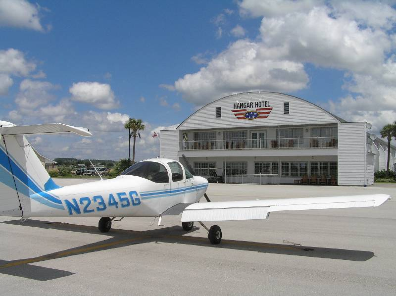
Airport Diner
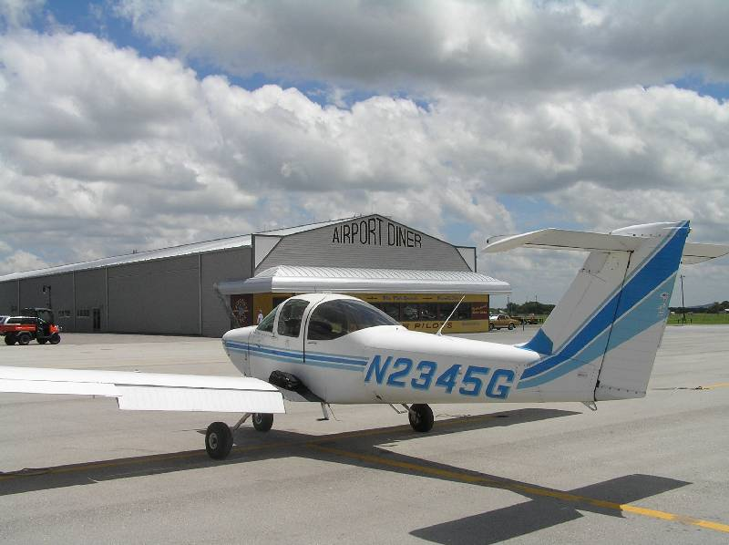
August 17, 2005, 2:00pm
Logged time
2.9 hours (solo, cross-country)
Total time 42
31.4 hours (dual)
10.6 hours (solo)
practiced: solo cross-country (GTU -> CLL -> AUS -> GTU), towered airports,
flight following
I moved up my long cross country from this weekend up to Wednesday. I'm not really
sure about the weather this upcoming weekend, and I'd like to just go ahead and
knock out my cross country requirements ASAP. Today, the plan is for towered airports.
Go to College Station (class D), to Austin (class C), and back to Georgetown. I've
been to both College Station and austin, but I've never done it all in one trip.
The trip to College Station is uneventful. I recognize all the landmarks. I get
all the radio calls on the nose. Even my landing isn't too shabby. Maybe it has
been awhile since I actually took the trip till I'm writing this (almost a week),
or maybe it really is just getting routine (which is good. I don't think you want
surprises...). Aaron Palermo met me at the airport, and we had an early supper together.
Lane's chicken fingers. But, as usual, I needed to get out quick so I would make
it back on time.
Leaving College Station, I got all the ground and tower calls correct again. But,
I had to wait on two jets in the pattern that were doing touch and goes, go arounds,
low approaches, etc. They were so fast that there was NO time to get out in between
them in the slow tomahawk. I seriously thought the controller forgot about me one
time, and I gave him another call... "Easterwood Tower, tomahawk 2446 November."
"Be patient, tomahawk 4-6-November, I still have a Citation on final."
I couldn't see it, but I stared REAL hard and glimpsing in the sun was a jet about
what seemed like 12 miles out. Again, he was on short final in no time, so it is
a good thing I didn't go.
The weather briefing before leaving College Station mentioned thunderstorms around
Houston, heading north-northwest but pretty slow. Still, I wanted to get out ahead
of them. Interestingly, though, the air was really smooth. It was very hazy, and
the air was stable. I climbed to 4,500ft and was LOVING the trip. Cool. Calm. And
nice scenery. Houston Center handed me off to Austin Approach while I was still
almost 45 miles out. I tried calling austin, but was getting no love. I switched
back to Houston to say I couldn't get Austin, but they basically dismissed me and
said "keep trying." sure enough, the next time I switched frequencies,
I got Austin no problem.
Now, this was my first time soloing in any towered conditions, much less class C.
And, it was about 6:05 or so in Austin, so I wasn't sure what kind of evening business
traffic I would be dealing with. Let's just say it was busy, but not unmanageable.
I did real well on the radios again, and the controller had me doing all sorts of
funny stuff. Turn crosswind early, s-turns on final for spacing, abort on final
and make a left turn to get behind a King Air. He was patient with me, and only
said once "please square off your base to final." that probably brought
me in a little early on someone's rear, which he wasn't counting on. I complied,
and no more helpful hints from the controller. I get three TGs in at Austin before
breaking off and heading north. Austin departure vectors me to Taylor, but I'm scared
to correct them. Eventually, I say "uhhh, I need to go to Georgetown"
and they basically say "oh yeah, we meant VFR to Georgetown...". I'm down
safe. 5 minutes early, before ground school. By the time I get tied down and checked
in, I'm a little late for ground school, but oh well, I was out there flying for
real.
Joey had been in Austin Class C also (I had heard him on the radios), and he said
I sounded real good on the radios. Check one for me. Tower controlled airspace ain't
so spooky anymore. Oh well, just a couple of pictures on the ground at Easterwood.
Proof I made it, I suppose.
Easterwood General Aviation Terminal
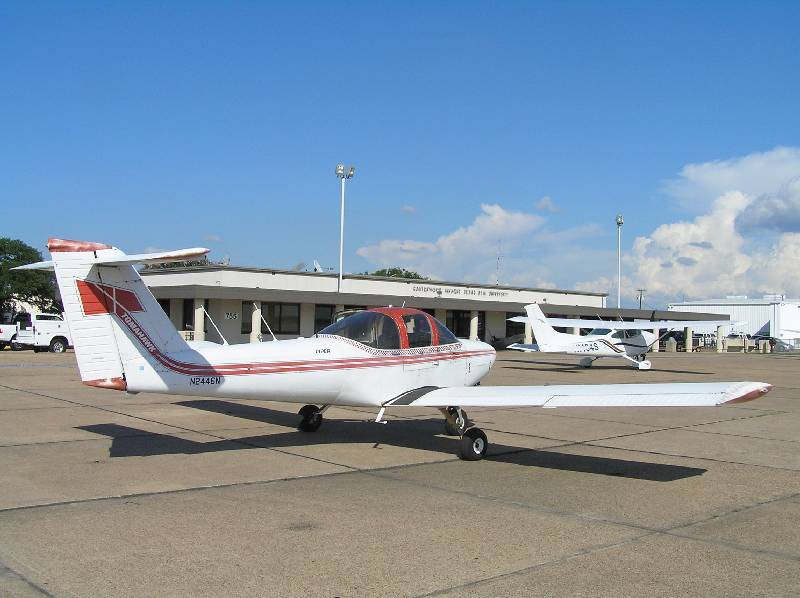
Easterwood Tower
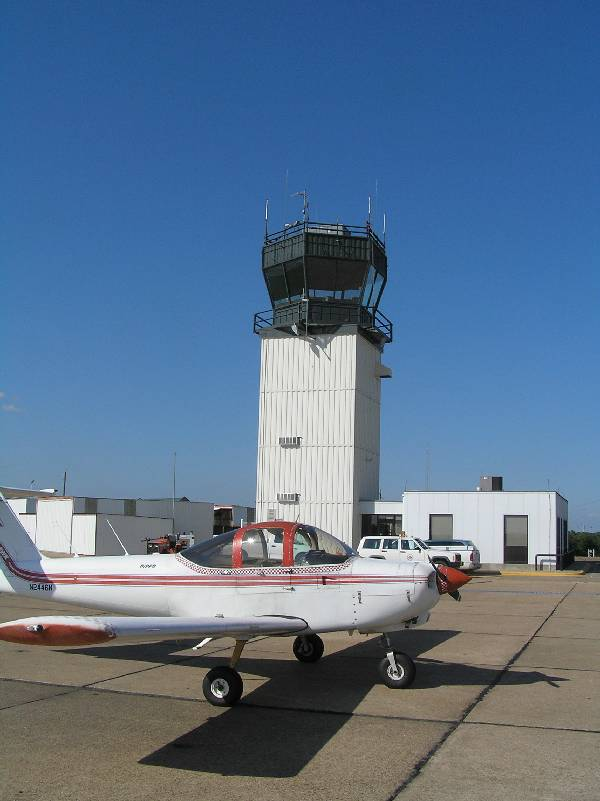
August 20, 2005, 10:00am
Logged time
2.1 hours (solo, cross-country)
Total time 44.1
31.4 hours (dual)
12.7 hours (solo)
practiced: solo cross-country (GTU -> BAZ -> GTU)
So, technically I have made all my cross country requirements. But, I've already
got the plane reserved, so I might as well get some time in. It was another morning
waiting for the clouds to lift. I had all the planning done, had the plane preflighted,
and the flight plan filed, and was just waiting for the ASOS at New Braunfels to
report ceilings over 3000ft. They finally did, and I was out.
This was just a short hop to New Braunfels and back. Around 65nm if I remember correctly.
However, I was in the slowest plane ever made. The wind wasn't a terrible factor,
and the cars on I-35 were STILL passing me. The GPS (backup navigation) went out
(dead battery), so I was REALLY on my own this time. Luckily, this is basically
a trip right down 35 so getting lost would have been ridiculous.
I see now that GPS makes finding the airport a lot easier. I knew I was in the general
vicinity, but I hadn't spotted the field yet. Next thing you know, I'm basically
on top of it. 3,500 ft, about 3 miles east. Plenty high above it, but it still felt
kind of silly to go "oh, THERE it is... Right below me..."
Austin flight following had told me that New Braunfels was pretty dead in terms
of traffic. But, when I start listening the the CTAF, New Braunfels is HOPPING.
3 or so planes in the pattern, more ready for departure, and a helicopter flying
odd-hand traffic from everyone else! I have room to cross midfield and enter left
downwind for 17. I can barely hear the helicopter calling his legs, and I have the
right away, and I can see him, so I continue my pattern and head in. Next thing,
I hear the helicopter call an aborted approach, do a 360 and make another go. Again,
I felt I had right away and he was flying right hand traffic in a left hand pattern!
bah. But, I see what it takes to pay attention to all the details out there.
The runways are fairly big, but this still feels like a podunk operation. I taxi
around till I find New Braunfels aero, which has a small cafe. I grab a quick bite,
and head out again. On the way home (no GPS still), I navigate just fine. I am so
confident, that I actually whip out my digital camera and take some pictures of
the hill country. And, I guess that is all I have to say about that.
New Braunfels Aero & Cafe
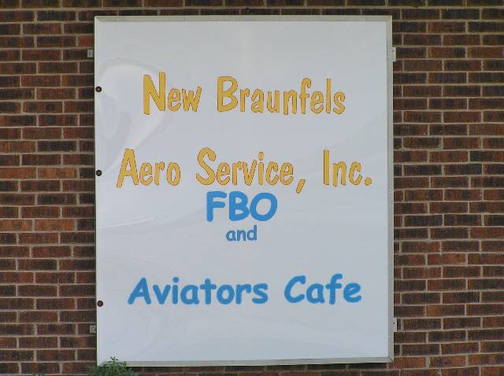
San Marcos Airport
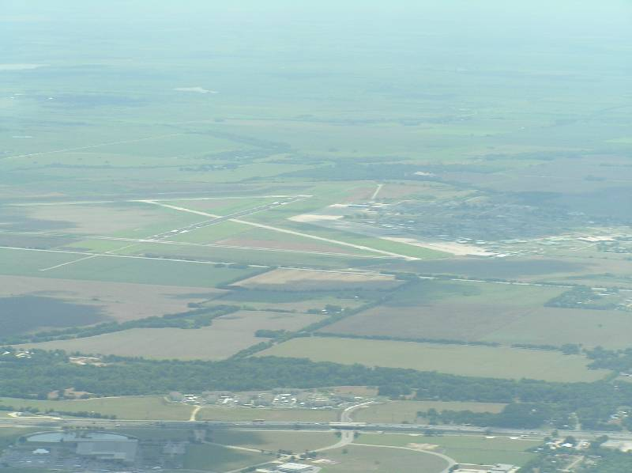
Lake Travis
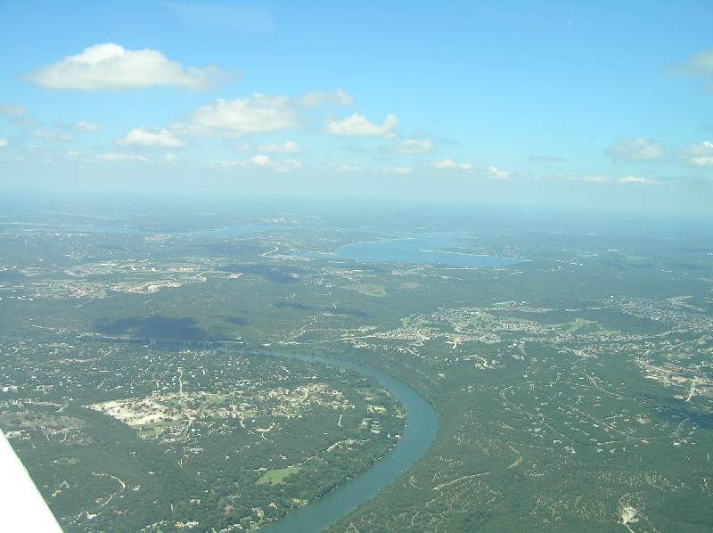
My favorite flying pic so far... 360 Bridge
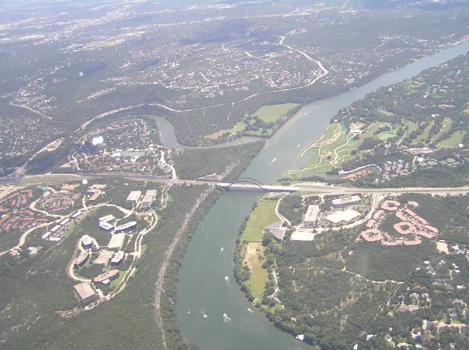
I'm finally at the point where I feel like I'm ready to be a full-fledged pilot.
At the beginning of this, I knew I had a lot to learn. And, now I think I'm there.
I'll take the written pretty soon. Then, some simulated instrument and check-ride
prep time, and finally, the checkride.
August 26, 2005, 3:00pm
Logged time
0.6 hours (dual)
Total time 44.7
32.0 hours (dual)
12.7 hours (solo)
practiced: simulated instrument, unusual attitudes
Part of the requirements for a private pilot ticket is 3 hours of simulated instrument
time. This means flying the plane by instruments alone as if you accidentally got
stuck in some clouds. Now, you can continue on and get an instrument rating, but
for that you need 40 hours of instrument time. Yikes. For a VFR ticket, they make
you do just enough instrument time so you would only barely die...
By "simulated instrument," I mean you can't see outside the plane. You
put this plastic hood around your head so that you can only see the instruments.
Let me tell you, you CANNOT trust what your body is telling you. You have to fully
trust the instrument readings. For instance, one time I thought I was completely
cock-eyed, and I was leaning up against the inside of the plane. But, in reality,
the plane was straight and level. Your body tricks you. Don't trust it. This is
also a great recipe for motion sickness.
That is fun and all for awhile. You do climbs, turns, descents, and climbing/descending
turns. In other words, basic attitude flying. Then, the fun starts. The instructor
says "close your eyes" and takes the controls. He flies the plane for
30-40 seconds doing all kinds of weird stuff so you get REALLY screwed up with your
senses. He gets the plane in a plenty cock-eyed position ("unusual attitude").
Then, you open your eyes, scan the instruments, and correct the unusual attitude
ASAP. If you are nose high, add full power, level the nose, then level the wings.
If you are nose low, cut power, bring the nose up, and level the wings. The first
few are strange, but I start picking them up pretty quick. However, if you thought
you were getting sick before doing basic attitude simulated instrument, then just
wait till you hit the unusual attitudes. Seriously, bring the barf bags if you can't
handle major roller coaster type action -- with your eyes closed.
The unusual attitudes are done, and I'm not feeling too great. But, we don't take
the hood off yet. Joey continues to give me headings and altitudes. Finally, he
has me take off the hood, and we are abeam the numbers for RW 18. After that, it
is just a normal landing. I have to hang around the hangar (heh, that sounds funny)
for about 30 minutes and drink a soda before I even feel well enough to drive home.
0.5 hours hood time logged. Oh joy, only 2.5 more hours of that to go...
August 27, 2005, 7:00am
Logged time
3.9 hours (dual, cross-country)
Total time 48.6
35.9 hours (dual)
12.7 hours (solo)
practiced: cross country (GTU ->
ADS -> GTU, class B airspace, 1 hour simulated instrument
I am done with all my cross country requirements, but there is a fly-out to Dallas
Addison this weekend to visit the Cavanaugh
Flight Museum. Although I don't need the cross country time, I can use some
of it for simulated instrument practice, and get in Class B airspace radio work
practice. So, I figure what the hell... it is still flying time. :) and besides,
once I start flying the wife and kids up to callas, Addison is probably the airport
I will use. so, I might as well get in a trip to become familiar with it.
We leave EARLY. I get up at 5am to be at the airport by 6-ish, so we can preflight,
fuel, and get weather briefings and be up by 7am. It is still dark when I start
to preflight. That sucks. We're up on time, and we start our journey north. Ryan
glances at the right tank and notices fuel spewing out the top of it, where the
gas cap is. We watch it for a few more seconds, and decide to turn back to GTU to
check it out. We call our return, and several other Pilot's Choice instructors (including
the head honcho Beth) tell us to just burn some fuel out of that tank, and it is
probably just the seal that is weak. Once we did, the fuel stopped spewing and we
headed back north.
George W. is still in town, so the TFR is hot over Crawford. We meet all the requirements
to to fly between the 10 and 30 nm radius zone, so we shoot for
TSTC airport before heading direct to Addison. all the while, I have the
hood on and am flying on instruments alone. it is nice and cool and smooth, so maintaining
heading and altitude is relatively easy. Much nicer than that last time I did simulated
instrument. Ryan is using all of my cross country planning to give me headings,
and he is checking my checkpoints for me. Soon enough we are near Dallas class Bravo,
so Ryan has me de-hood to help keep an eye out for other air traffic.
So, class B is no big deal. You talk to a few more people, and there are a couple
of hand offs in between. But, it is the same old story, and I figure I can handle
class bravo no problem. They vector us in right over
Love Field, which basically points you to enter right downwind for 15 at
Addison. Soon enough we are down, and taxi to FirstAir FBO. We meet up with everyone
else, and head to the museum.
I took a bunch of pictures at the museum, and one day I'll get them all resized
and posted. If you are interested at all in WWI and WWII war birds, it is a neat
place to go. Just go early in the morning. The hangars aren't air conditioned, so
it gets warm... quickly.
We all go out to lunch, where I get to spend some time with the Shoemaker family.
They are kind enough to haul me around and let me eat with them. Curtis owns his
own Cherokee 180, so we exchange info so that I can go flying with him someday.
I'm still waiting on that call, Curtis.... :)
After we eat, it is time to head back. We get back to FirstAir, order up some fuel,
check the weather, and file the flight plan for the return trip home. It is hot,
damn hot. The runway is 7000ft long and we'll probably need most of it given the
density altitude. We get up well enough, and Dallas regional vectors us south, but
at a low altitude to keep us cooking in the plane. Once we are clear of class B,
we get to climb higher.
It is so bumpy and hot on the way home, Ryan doesn't put me under the hood. I'm
quite certain I would have been sick under such conditions. We do the TSTC flyover
again, and this time we notice Air Force One parked on the ramp. It ain't everyday
you get to fly over air force one.
again, we are wheels down at GTU soon enough, and it was a successful 3.9 hours
of round trip. Dallas, I have conquered thee. "I shall return!" for me
to poop on!
August 28, 2005, 3:00pm
Logged time
1.1 hours (solo)
Total time 49.7
35.9 hours (dual)
13.8 hours (solo)
practiced: slow flight, power on/off stalls, steep turns, performance takeoffs/landings
I was supposed to finish up some dual instruction with Joey today, but a couple
of the tomahawk's are down for 100hr inspections. That means I can solo, but no
dual instruction. Oh well, it has been awhile since I just went up and did maneuvers
and worked on performance takeoffs/landings. Might as well knock off some of the
rust since the checkride is coming up sooner rather than later.
I nail slow flight and the power on/off stalls no problem. My left steep turns are
also steady eddie. As feared, my problems maintaining altitude on the right turns
have re-appeared. A couple of of 360's in a right turn corrected that soon enough.
I'll need to be able to knock those out the first time to pass the checkride, though.
head back in for some short field and soft field takeoffs and landings. Of course,
the takeoffs are easy (and fun, actually). But the performance landings need some
work, especially the short field.
overall, just a fun day of messing around, knocking off the rust.
August 30, 2005, 3:00pm
Logged time
0.7 hours (dual)
Total time 50.4
36.6 hours (dual)
13.8 hours (solo)
practiced: simulated instrument, unusual attitudes
More fun simulated instrument time! Yay! still, out of 0.7 hours of instruction,
we only knocked off another 0.5 of hood work. It was an identical-ish lesson to
August 26, so you can read about
the trials and tribulations of hood work and unusual attitudes there.
September 1, 2005, 9:00pm
Logged time
1.4 hours (dual)
Total time 51.8
38.0 hours (dual)
13.8 hours (solo)
practiced: night flight, simulated instrument, VOR tracking, night landings, landing
light out landing
I need some more night landings (to a full stop) to meet night flying requirements.
We (Joey and I) decide to make the short trip to Bergstrom to use the long runways
for stop-n-goes, which meet the requirements for full stop. Also, I can get under
the hood and knock out simulated instrument time. Oh yeah, baby.
I like flying at night. It is calm. It is cool. And the tomahawk actually flies
like a decent airplane. The hood work is no big deal in these conditions. I track
to the CenTex VOR to get to Bergstrom, after which Joey gives me vectors to 17L
at Bergstrom. I take off the hood and enter left closed traffic on 17L. There is
a Mooney doing the same.
As usual, my first landing is a pancake. I fly the plane straight into the runway.
Aren't first night landings fun? They get better and better, and pretty soon they
are just as good as my day time landings. I'll let my first passenger be the judge
of how good that is, though. We get in six stop-n-goes, and declare that we are
ready to head back to GTU. There is lots of inbound traffic (around 10pm, Joey says
there is a 10 o'clock rush), so they vector us pretty far east before turning us
north.
On the way back, I get more hood work. Joey vectors me all the way to a 3 mile final
for 36. And, after taking off the hood, he turns off all the panel lights in the
cockpit AND the landing light. He calls it a "full electrical failure night
landing scenario." thanks, Joey. Thanks. I use my new red led flashlight to
peek at the panel every now and then. I make it down nice and slow, and keep a good
'feel' for where the ground is using peripheral vision and the runway lights. I
feel for the runway lower and lower, and it actually ends up being one of my better
landings for the night. I think sometimes I get comfortable with 'normal' landings
and let things happen naturally, when in reality these other landings where I have
to concentrate end up being a lot better BECAUSE of the concentration. I'm going
to make an effort to employ this level of concentration on ALL my landings from
now on.
Night requirements are out of the way. Also, 0.8 hours of simulated instrument logged,
bringing the total to 2.8 hours. The other 0.2 hours of hood time will come with
the check ride prep work... Which is all I have left to do. Guess I better start
lining up passengers...
September 4, 2005, 3:00pm
Logged time
1.1 hours (dual)
Total time 52.9
39.1 hours (dual)
13.8 hours (solo)
practiced: short/soft field takeoff/landings, S turns, simulated instrument, VOR
tracking, emergency engine out landings, go around
We started check ride preparation today. So, all of this is just refresher. My S
turns were better than I thought they would be, so maybe it won't be so hard to
get them within tolerances on the check ride.
Things I am worried about for the check ride:
- Short field landings
- Turns about a point
Everything else I feel I have a solid grasp on. Guess that is why I still need a
little practice before the checkride.
September 8, 2005, 3:00pm
Logged time
1.0 hours (dual)
Total time 53.9
40.1 hours (dual)
13.8 hours (solo)
practiced: short/soft field takeoff/landings, slow flight, stalls, short field landings
More check ride preparation. Not much else. Wasn't really a 'feel good' day for
me. Some things seemed off, or rushed, I don't know. We actually sat down and scheduled
the checkride for next week before flying, so I think I was a tad frazzled that
the end is really in sight. It was like, "oh yeah, at some point I have to
do this for real, with the examiner!"
September 9, 2005, 3:00pm
Logged time
1.1 hours (dual)
Total time 55.0
41.2 hours (dual)
13.8 hours (solo)
practiced: short/soft field takeoff/landings, simulated instrument, unusual attitudes,
turns about a point
Still more check ride preparation. Today was a lot better. I was more relaxed. All
the maneuvers went well. I'm back in the "I'm ready to do this" mode.
September 12, 2005, 5:00pm
Logged time
1.2 hours (dual)
Total time 56.2
42.4 hours (dual)
13.8 hours (solo)
practiced: short/soft field takeoff/landings, simulated instrument, unusual attitudes,
turns about a point, stalls, slow flight... So, everything.
I went to Pilot's Choice yesterday and since the weather was bad, all I did was
paperwork. Which is fine with me, because it had to get done sometime anyway. But,
I'm officially application'd and endorsed, so all that is left is the checkride.
Oh yeah, I had already passed the written exam on Wednesday.
Prior to the real thing, though, I am going to take a pre-check checkride with Beth
so she can give me pointers on what is left to work on, or polish up, before the
real thing.
Everything in a general sense goes well. First, I don't add flaps on the soft field
takeoff. But, in reality I had tried it with and without flaps, and it didn't make
much of a difference. So, the nameless instructor said don't use them. Next, we
do stalls, but with banks. I had never done stalls while banked before, but I keep
my mouth shut and go for one. I bank like 30 deg and Beth just says "no more
than 10." Ok, that makes it not such a big deal. But again, I had never done
them before....
Steep turns and emergency procedures go fine. My hood work was decent, but Beth
says I bank a little too far and that caused me to lose some altitude. I'll need
to watch that. My short field takeoff, I forgot to put in 10deg of flaps. Now THAT
was my fault. Can't blame the instructor there. :)
All in all, it went well. Beth says I just need to enter and exit the maneuvers
more smoothly. For instance, in the power off stalls, I aggressively pitched up
to get it to stall. Beth says enter smoothly, don't pitch up as much, and it might
take a little longer, but it will stall nicer. So, I just need to remember to be
a smooth operator... Other than that, I'm checkride ready.
September 15, 2005
Logged time
0.8 hours (dual)
Total time 57.0
43.2 hours (dual)
13.8 hours (solo)
practiced: last ditch checkride prep
Just went up with Joey for a quick ride to keep in the hot-seat for the checkride.
Everything was pretty much the usual. Knocked out some quick maneuvers, and then
did a few performance takeoffs/landings.
September 16, 2005, 9:00am
Logged time
1.3 hours (PIC)
Total time 58.3
43.2 hours (dual)
15.1 hours (solo)
practiced: FAA checkride
Well, that is it. No more farting around. This is the real deal. Will I be a pilot
or not? Well, I hate suspense and surprises, so I'll go ahead and tell you...
I PASSED! That's right, dudes, I am now a certificated private pilot.
The exact wording goes something like this:
This certifies that Darren Lee Oldag has been found to be properly qualified and
is hereby authorized in accordance with the conditions of issuance or the reverse
of this certificate to exercise the privileges of PRIVATE PILOT, AIRPLANE SINGLE
ENGINE LAND.
So, no sea planes (yet).
There are two phases to a checkride -- an oral exam and the flight practical itself.
I actually did the oral exam Thursday evening (5-7pm) so I could fly early in the
morning on Friday (9-11am) hoping for co-operative weather. The oral exam is about
what I expected -- a solid two hours of questioning regarding pretty much everything
I have learned in the last two and a half months. "What airspace is this,"
"what the the weather and cloud minimums in that airspace," "Can
you fly here without talking to anybody..." etc etc etc. There was lots of
other stuff about aero-medical factors, decision making, aircraft systems, weather,
cross country planning... Heck, I can't remember it all. I fubar'd three things
on the oral, though I deem them minor in my opinion. One, I just had a brain fart
on what a NOTAM-D would contain (this is a 'distance' NOTAM, so it contains information
relevant to all terminal areas, like navigation aids going down and stuff). That
was completely my fault, and I should have known that. The second was what do the
minimum elevation level numbers on a sectional mean. I thought it was just the highest
obstacle or terrain on that quadrangle, but it turns out it is the highest obstacle
(or terrain) rounded up, +100 ft. So, it gives you 100ft of clearance if you fly
that altitude. I had never heard that, and it is not how the sectional describes
it. The third question was tricky, and I admit she (Beth, the head of Pilot's choice
as well as the examiner) stumped me. In class E airspace, with the clouds at 900ft
AGL, can you get into the airport? I said 'no' because the minimums are 1000 ft
ceiling and 3sm visibility. But, I forgot about 'special VFR' in which case you
can get clearance from ATC as long as you are able to remain clear of clouds and
have 1 mile visibility. Since this is class E to the ground, you CAN get special
VFR! D'oh! but, I erred on the side of safety, so I was technically wrong but I
wouldn't kill nobody. Thus, I passed the oral.
As for Friday morning, the weather was all but co-operative. Thunderstorms in the
vicinity and low-ish ceilings made me postpone the checkride. I was technically
"pilot in command" on this ride, so it is my call to go or no-go. A big
stalled cold front just north of us just seemed like it could produce some bad weather
in a hurry, and the thunderstorm to the west was moving east, very slowly. In retrospect,
the thunderstorm rained itself out and the cold front didn't produce much of anything
over GTU. So, I COULD have made it in that two hours, but it was still the correct
decision to wait. Probably a plus for the examiner. :)
So, I waited. At 11am, it did clear up, but Beth was booked till 5pm (and beyond).
She had one lesson from 11-3pm, in which case she said she would squeeze me in at
1:30-3. So, I went home for about an hour and ate lunch, and then went back to PCA
to continue the waiting game. Well, it turns out she COULDN'T squeeze me in at 1:30,
but her 3pm canceled! So, more waiting till 3pm.
finally, at 3pm, we were good to go. It was starting to get hot and a little gusty,
but nothing I couldn't handle. Beth watched me preflight, because even that is in
the practical. I remembered to give a passenger briefing about seat belts and emergency
procedures (opening the door). After that, I started the engine and it was all familiar
territory from there.
Winds were out of the north at 5-10kts, so we taxied to 36. Started with a soft
field takeoff, and departed the pattern from downwind towards the first checkpoint
of my fake cross country. Interestingly, she had picked Palacios (PSX),
probably thinking I had never heard of it. But, my brother's bay house is near there,
so it was a destination I had been eying for a real trip anyway. The tricky part
about planning that one is that it cross two sectionals and the front and back of
one of them. But I digress... I made it to the first checkpoint on time. Early,
in fact. She asked how long to the next checkpoint, and I said 9 minutes, arriving
at 4:10. That was enough for beth, so we moved on.
We did slow flight, power off stalls, power on stalls. I remembered the clearing
turns and pre-maneuvers checks each time. I also did them 'nice and smooth' as beth
had recommended from the last time we went up. Next were steep turns (to the right
is my nemesis), but honestly I did them better than I ever have before. I think
the altimeter needle only moved once, and that was quickly remedied. Nice job, if
I do say so myself.
Next I put on the hood and did some instrument flying and unusual attitudes. Those
had never been a problem before, and today was no different. I just remembered to
keep it nice and smooth, as Beth likes it. We descended to about 800ft AGL (1600
MSL) for some ground reference maneuvers. My turns about a point weren't spectacular,
but I kept a proper distance from the point and adjusted for the wind accordingly.
That was enough of that, so we started back for the airport. Checked AWOS, and the
winds were still out of the north, and Georgetown traffic was still using 36. I
needed to maneuver way north to get on the 45 for right downwind, but it was nice
to just cruise for a minute. Beth also took the opportunity to cut engine power
(at 1000ft AGL, mind you) to check my emergency procedures. I immediately turned
north (into the wind), picked a suitable spot to land, and started to slip for it.
Once she was convince I had it made, she called go-around and we were climbing again.
I set back up for the 45 entry right downwind 36. Made all the proper radio calls,
and she wanted to see a soft field landing followed by a short field takeoff. The
landing wasn't my best. Some weird right->left breeze has right over the threshold,
so it shoved me a little left. I tried to line it back up but didn't really have
time, so I landed slightly cockeyed. Beth didn't say anything, so I didn't yell
out "damn!" The short field t/o after that was uneventful, which is a
good thing. Next time around, a short field landing to a full stop. The crosswind
breeze didn't trouble me as much that time, and it was probably one of the better
short-field landings I had done. And with that, we were done.
After landings checklist completed, and taxi back to Pilot's Choice. Park, tie her
down, and I'm feeling good. Beth hadn't cursed or screamed, taken the controls,
or even said "that didn't meet standards." so I'm pretty sure I passed.
But, just to confirm it, she asks for my log book so she can go inside and start
paperwork. So, I HAD made it. Awesome.
The paperwork is completed, and I get my log book endorsed "private pilot checkride
passed satisfactorily" and a "temporary airman certificate" issued
to me. The real thing should come in 120 days or so. I take some dorky pictures
with Joey and Beth, which I'll post below. And that is that. I am now a private
pilot. Who wants to go flying?
For those that are reading this hoping for some inspiration, I could tell you don't
be nervous about your checkride, but it wouldn't work. And a little nervousness
is probably a good thing. All I can say is that the examiner is looking for reasons
to pass you, they are not there to look for reasons to fail you. They will fail
you if you screw up, but just don't give them that chance.
This journey was relatively short for me. 2 1/2 months by my count. Flying is definitely
more accessible than I thought, and only slightly less expensive than I anticipated.
So, if you are interested at all... just go do it. You're only on this earth for
a short time, so you might as well make the most of it why you are here.
I'll keep writing about my flying adventures from time to time. I probably won't
flog much of the day-to-day kind of stuff, but if I go somewhere neat, or take a
passenger who considers it an adventure, you'll see it get written up. Maybe I'll
split out the student stuff from the flog continuation, but I can always do that
later.
See you in the friendly skies!
Two handsome pilots. And, I was Joey's first student from "off the street"
to full fledged private pilot
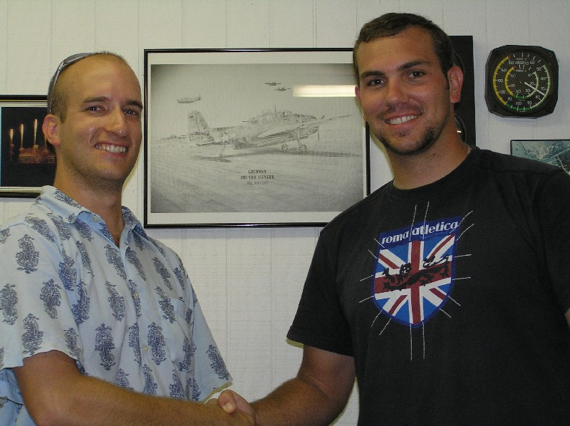
Official handoff of Airman's Certificate from Beth
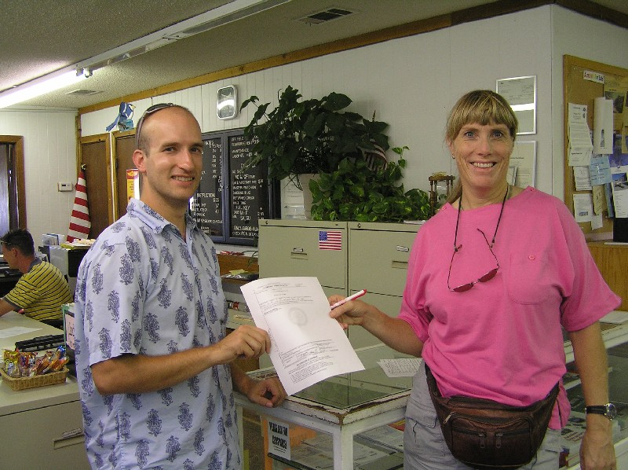
"Congratulations, you are now a private pilot."
{kind=link}
{kind=link}
{kind=link}
{kind=link}
{kind=link}
{kind=link}
{kind=link}
{kind=link}
{kind=link}
{kind=link}
{kind=link}
{kind=link}
{kind=link}